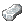
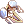
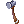
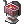
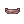
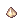
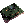
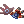

Mallinock's Mechanic Class Guide
| This guide has not been updated in a while. | ||
|---|---|---|
| Information on this page may be obsolete and outdated. Please refer to the author for information on future updates. Reason: Last update June 2019 |
||
| Mechanic | |||||||||||||||||||
|---|---|---|---|---|---|---|---|---|---|---|---|---|---|---|---|---|---|---|---|
 | |||||||||||||||||||
| Job Base: | Blacksmith
Whitesmith | ||||||||||||||||||
| Written By: | Mallinock | ||||||||||||||||||
| |||||||||||||||||||
Mechanic is a versatile class with many build styles to suit your different needs. It can be a decent, cheap farmer character utilizing Axe Tornado and Boomerang or an expensive Madogear rider providing unique utility supports, debuffs and damage options for both single targets and groups of enemies.
Unfortunately, you won't make any money by forging as a Mechanic, so you should forget about crafting weapons entirely, either for your own use or Zeny-making. However, Mechanics are able to refine weapons with a higher success rate than using the NPC with regular ores like Oridecon, which can save you a fair bit of money.
About me: Mechanic is one of my favourite classes thematically. While I am not anywhere near being a top tier player, let alone as a Mechanic, I love theorycrafting, calculations and optimization problems. As such, I want to impart as much knowledge about fundamentals for any new players and potentially give a stronger player more to think about when deciding builds.
Do keep in mind that most of what I write are suggestions. Never treat anything I say as the absolute truth or the only way to do something. Ragnarok is a complex game with many possibilities that one single person will never entirely capture on their own. Experiment, try out different ideas and most importantly, have fun!
Also if you spot an error or think something is missing from the guide, shoot me a message on Discord (@Mallinock#4870) or forum PM or even in-game message (I am primarily on a character named Mallinock. How convenient!).
Last updated: Halloween 2018
Stats
- STR - One of the Mechanic's primary stats for damage; this determines physical ATK. It also improves carry capacity, which means it lets you farm item drops for longer and/or allow you to hold more skill components (the most noteworthy being Madogear fuel, parts and cannon balls).
- AGI - An important stat for Madogear builds, where getting to 193 ASPD is a priority. It isn't as important for an Axe Boomerang build, but extra FLEE to dodge enemy attacks is always handy to have.
- VIT - A bit of DEF and more HP is always important, especially for PVP. General PVM builds can safely use the Base VIT + Bonus VIT = 100 rule, which grants a handful of immunities to certain statuses like stun. Extra VIT also strengthens Axe Tornado, the Axe Mechanic's mobbing skill, and Self Destruction, the PVP Mechanic's ultimate attack.
- INT - For SP and lowering variable cast time (VCT). This is very important for Madogear build as it is quite SP-heavy. This is also crucial for Self-Destruction PVP build, both for increasing its damage by increasing SP, as well as reducing its variable cast time. Axe builds will need it less, but any extra points should go here to help with SP upkeep.
- DEX - For lowering variable cast time and HIT (your accuracy). Most builds will want 120 DEX to get Temporal Dex Boots' fixed cast time (FCT) reduction and ranged attack damage boost, which is by far the most effective way to boost DPS as a Madogear build.
- LUK - For extra ATK if you're doing a 120 STR build. Going past 120 on your base stats is extremely expensive in terms of status points, so if you feel you still need more "oomph", add it into LUK and keep the total base+bonus value in multiples of 3. Every 3 LUK = 1 stat ATK.
Skills
Merchant Skills
Battle Skills
| Skill | Notes |
|---|---|
 Pushcart Pushcart
|
Lets you use the all-important Pushcart, which has 8000 weight capacity for up to 100 stacks of items. Required for skills like Cart Revolution, Cart Boost, Cart Termination, etc. Higher levels reduce the movement speed penalty.
Technically not a battle skill, but you need it for battle skills down the line. You should always have your Pushcart with you, so max it to avoid the annoying movement penalty. Especially important for Madogear, who should use it store their Mado supplies. Recommended Level: 10 |
 Mammonite Mammonite
|
Pay 100~1000z to deal 150~600% ATK on a single melee target.
If you want to get Cart Termination, you need to have learned Lv10 Mammonite. For Madogear builds, this is outclassed by Knuckle Boost for single target DPS. You probably won't ever use it for levelling, as it has no mobbing potential. Recommended Level: 10 for Cart Termination, 0 otherwise |
 Loud Exclamation Loud Exclamation
|
STR +4 and ATK+30 for yourself and all allies in screen for 5 minutes.
Quest skill, so no cost to get, should be permanently active. |
 Cart Revolution Cart Revolution
|
Requires Pushcart. Deal neutral 150% ATK on a 3x3 area on melee target, and push back every enemy hit by 2 cells. Damage is increased by 1% for every 80 weight in your cart, so at 8000 cart weight, this skill does +100% ATK. Therefore, the maximum possible total is 250% ATK.
Quest skill, so no cost to get. It is the only area of effect (AoE) attack that Merchant->Blacksmith/Whitesmith has, so it's mandatory for solo-levelling. In a Gramps party you may opt not to use it, as the push back effect can knock enemies out of your party members' attacks. |
Other Skills
| Skill | Notes |
|---|---|
 Enlarge Weight Limit Enlarge Weight Limit
|
Increases weight limit by 200~2000.
Any extra points should go here, but it's not mandatory to max as your base STR should be high enough to give yourself decent weight limit. For PVP, maxing this is mandatory to reduce the chance of a Shadow Chaser's Masquerade skill from connecting. Recommended Level: 5 for Pushcart, up to 10 if nothing else |
 Discount Discount
|
Decreases NPC cost of items by 7~24%.
Max this. Being able to buy NPC items for less zeny is an amazing boon. Madogear builds especially will want this when restocking on fuel and cannon balls. Recommended Level: 10 |
 Overcharge Overcharge
|
Increases the amount of Zeny received when selling items to NPCs by 7~24%
Max this to get the most out of the random drops you accrue. Every time you sell junk items to the NPC, you should do so on a character with this skill maxed. Recommended Level: 10 |
 Vending Vending
|
Lets you open a shop to sell items to other players. The shop has capacity for 3~12 stacks of items.
I leave it maxed so I can open shop immediately instead of having to talk to Reset Man. Up to you if you're somehow scrounging for skill points at Merchant though. If Mech is your main, you can train up a Merchant on a different account enough to max this skill and then leave that Merchant up using @autotrade (@at). That way, you can play with your Mechanic while still vending. Recommended Level: 10 |
 Identify Identify
|
Identify an unidentified item. Essentially a  Magnifier in skill form. Magnifier in skill form.
Questionable, since the Kafra also offers the service for only 100z per item. It's only really useful for instances that have a large variety of different monsters like Endless Tower, Endless Cellar, and Infinite Space, where you might need to check your numerous unidentified drops to see if anything is worth carrying. Recommended Level: 0 or 1. |
| Change Cart | Change the appearance of your Pushcart. The higher your base level, the more styles you can choose from.
Quest skill. Use it. You can't be caught with a poor man's wheelbarrow, you need style. |
 Change Cart 2 Change Cart 2
|
Change the appearance of your Pushcart. Three styles for you to choose from!
Quest skill. Unlike the other Change Cart, you don't require a certain base level to unlock the styles, all of them are available immediately. |
 Buying Store Buying Store
|
Open a store that buys items from other players at a set price. You must have at least 1 of the item you are buying.
Every class is capable of opening a Buying Store. However, classes other than Merchant types can buy only two different kinds of items, while Merchants can buy five. Additionally, other classes must pay more money for each buyer shop license. In order to learn this skill, you will need to head to |

Blacksmith Skills
I'm not going to bother covering the forging skills. There's no point to taking any of them unless you're doing a weird Veteran Axe [2] build (note: don't).
| Skill | Notes |
|---|---|
 Hammer Fall Hammer Fall
|
30~70% chance of stunning enemies in a ranged 5x5 area.
Get it for Gramps. You probably won't use it too often, but if it stuns the straggling enemies harassing your DPS or healer classes, they'll probably appreciate it. Maybe. I can dream. Also it's a pre-requisite for Cart Termination. Recommended Level: 2 for Adrenaline Rush or 5 for Cart Termination |
 Adrenaline Rush Adrenaline Rush
|
For 30~150 seconds, increase ASPD of yourself and all party members wielding axe or mace class weapons. Blacksmiths/Whitesmiths/Mechanics receive +7 ASPD skill modifier, other classes receive +6 ASPD skill modifier (Don't mistake this for a flat ASPD boost).
For initial levelling, max this since you're most likely spamming Cart Revolution or auto-attacking mobs. The effectivity isn't increased by the skill level but using a bit less SP doesn't hurt. If you have this maxed, you fulfill the prerequisites for Recommended Level: 5 |
 Weapon Perfection Weapon Perfection
|
For 10~50 seconds, weapon size modifiers are all set to 100% for yourself and party members.
This is one of the more useful party buffs, which of course means it has the shortest duration ever. Max it. Recommended Level: 5 |
 Over Thrust Over Thrust
|
For 20~100 seconds, boost the ATK of party members by 5%~15%, and boost your own attack by 5~25%.
Now that it doesn't break allied equipment, go nuts with this while you're in party. It's a very nice boost to have! Recommended Level: 5 |
 Maximize Power Maximize Power
|
Maximizes Weapon ATK variance, making you deal the highest amount of damage possible in every hit. Drains 1 SP every 1~5 seconds.
Max it. Toggle this on and off as you need, as it can easily sap all your SP if left on while you hunt. SP leeching gear (Thanatos Axe, Rideword Hat) can completely negate the drain if you're fast about killing. Weapon variance can be pretty huge, so eliminating it altogether is a nice thing. Recommended Level: 5 |
 Hilt Binding Hilt Binding
|
Passive skill. STR+1, ATK+4. Adrenaline Rush, Power-Thrust and Weapon Perfection last 10% longer.
It's minor, but it's also only 1 skill point and you've got nothing else to spend it on. Recommended Level: 1 |
 Weaponry Research Weaponry Research
|
Passive skill. +2~20 ATK and HIT. Also +1~10% to forging success rate, but no one cares about that.
Also minor, so much less of a priority. Your active buffs are more beneficial. Any leftover can go here. Recommended Level: 2 for Weapon Perfection, 10 for Upgrade Weapon as Whitesmith |
| Skin Tempering | Passive skill. Fire property resistance +4~20% and Neutral property resistance +1~5%.
Handy. Not a priority, but this should be maxed when you can. Recommended Level: 5 |
 Advanced Adrenaline Rush Advanced Adrenaline Rush
|
Requires a Soul Linker to have cast  Blacksmith Spirit on you and for you to know Lv5 Adrenaline Rush. For 150 seconds, increase ASPD of yourself and all party members wielding any type of weapon besides bows. Blacksmith Spirit on you and for you to know Lv5 Adrenaline Rush. For 150 seconds, increase ASPD of yourself and all party members wielding any type of weapon besides bows.
If you ever meet a Soul Linker who knows the Blacksmith Spirit link, you'll definitely want to keep this buff active on the party. |
 Weapon Repair Weapon Repair
|
Repair broken equipment back to a usable state using metal items in your inventory.
Equipment stripping tends to be more common in PVP environments than breaking, and unbreakable axes and maces being the usual weapon of choice means you'll never need it for your main weapon. Contrary to the name, do note it repairs armours, headgears and accessories as well. That being said, this can still be handy in instances where enemies can break your equipment and no one can leave until the instance is finished. The most common offenders would be Old Glast Heim hard mode, and the Bio Labs mobs on the trek to Wolfchev's Laboratory. Recommended Level: 0 or 1 |
 Finding Ore Finding Ore
|
Passive. Add a low chance of ores and elemental stones dropping from any enemy when you kill them.
If you want to make Fixed Automatic Weapons (FAW, don't confuse with Fallen Angel Wings), this can be a bit handy. Or you can just always hope for lots of You'll need to learn both Iron Tempering and Steel Tempering as prerequisites for this skill. Neither of those skills are useful in any way aside as a stepping stone to Finding Ore, should you choose to get this. Recommended Level: 0 or 1 |
 Unfair Trick Unfair Trick
|
Zeny cost of Mammonite reduced by 10%.
But will you ever use Mammonite again after you have access to Axe Boomerang / Power Swing / Cart Termination / Knuckle Boost? |
| Greed | Grab all dropped items within 2 cells of you (5x5 area).
...But you have @autoloot... Though, this does help you snag items while in a party with people who have @al turned off. Every Zeny counts! |


Whitesmith Skills
| Skill | Notes |
|---|---|
 Cart Termination Cart Termination
|
Requires a Pushcart and Cart Boost must be active. Consume 600~1500z and strike a foe at melee range with your cart, dealing (current cart weight / 15~6)% ATK, and stun them with a 5~50% chance.
At Lv10, with a full capacity 8000 weight cart, this deals 1333% ATK damage, with your ASPD being the only delay between consecutive uses. It has great potential for Whitesmiths and early Mechanics, but the cost is very high. If you're striking at 193 ASPD (appox. 7 hits per second), that's 10500z per second loss. Spamming this skill for a single minute total is already over half a million Zeny gone. Note that this is a pretty niche skill to focus a build on. It's still definitely a contender for any Mechanic who wants to avoid the Madogear for any reason. Recommended Level: 0 or 10 |
 Maximum Over Thrust Maximum Over Thrust
|
Consume 3000~5000z and grant yourself a bonus +20~100% ATK for 3 minutes. For non-axe and non-mace weapons, there is a 0.1% chance to break it with each attack. Overrides Over Thrust, and Over Thrust will not take affect over this skill.
Vastly superior to Over Thrust as it only affects yourself, and grants a far higher bonus too. Combined with Cart Termination, you can get 1433% ATK per strike. You can also use your Mechanic axe skills in conjunction with this buff. Recommended Level: 5 |
 Cart Boost Cart Boost
|
Requires a push cart. Boost movement speed by 20% for 60 seconds. Does not stack with other movement speed enhancements.
Even if you're not getting Cart Termination, get this anyway, since extra movement speed is always appreciated. Recommended Level: 1 |
 Melt Down Melt Down
|
For 15~60 seconds, all your hits have a 1~10% chance of breaking your target's weapon and a 0.7~7% chance of breaking one piece of their armour. Against monsters, it will instead decrease their ATK or DEF by 25% for 5 seconds.
Good buff for PVP, as repairs are not as accessible. Most PVM situations can do without it, but it does still increase your DPS a bit if it triggers the DEF fall. Recommended Level: 0 or 10 |
 Weapon Refine Weapon Refine
|
Allows you to upgrade a weapon by consuming a  Phracon (Lv1),  Emveretarcon (Lv2) or Oridecon (Lv3/4). Your Job Level improves your success rate past Job Level 50, for a maximum of +10% at Job Level 70. In NovaRO, Mechanics of any job level has the same success rate as a Whitesmith JLv 70. Emveretarcon (Lv2) or Oridecon (Lv3/4). Your Job Level improves your success rate past Job Level 50, for a maximum of +10% at Job Level 70. In NovaRO, Mechanics of any job level has the same success rate as a Whitesmith JLv 70.
A good way to save or earn money as Whitesmith/Mechanic. It will require some market research on the weapons you choose to refine, but overall this is a very handy skill to have to help you over upgrade weaponry and is well worth the skill points. Recommended Level: 10 |
Mechanic Skills
Madogear Skills
Every active skill listed in this table requires you to be riding a Madogear.
| Skill | Item(s) Required | Notes |
|---|---|---|
 Magic Gear License Magic Gear License
|
Allows you to ride a Madogear and use Madogear exclusive skills. Movement speed while in Madogear will increase per level. At maximum level 5, Madogear walking speed will be equivalent to a Knight riding a Peco Peco (approximately 200% movement speed). Also permanently increase ATK by 15~75, whether you're in a Madogear or not.
All builds should max just for the ATK bonus. Axe build has this as less of a priority, Madogear builds will want it maxed quickly to enhance their movement speed. Recommended Level: 5 | |
 Knuckle Boost Knuckle Boost
|
Launch the Madogear's fist at a target up to 11 cells away and deal 300~700% ATK. Damage increased by DEX.
The Madogear's primary single target spam attack. Perfect for MVPing. Recommended Level: 5 | |
 Pile Bunker Pile Bunker
|
 Pile Bunker Pile Bunker
|
Strike a target up to 3~5 cells away and nullify defensive buffs on the target with a 40~70% chance.
Not too useful in PVM. It can be used to break Reflect Shield on some MVPs but they are few and far between. In PVP it has a bit more use to shatter tanky Royal Guard buffs, but often times enemies will escape to recast their buffs. Sorcs can also use Dispel at a farther range and are generally better suited for the buff removal role, since their skill also removes offensive buffs. Recommended Level: 0 for PVM, possibly 3 for PVP |
 Vulcan Arm Vulcan Arm
|
1 Vulcan Bullet (Consumed) | Strike a target up to 13 cells away for 70~210% ATK and deal splash damage in a 3x3 area around target. Damage is increased by DEX.
Outclassed by Knuckle Boost for single targets, outclassed by Arm Cannon for AoE. Unfortunately, you have to max it for Arm Cannon. If you're levelling as a Madogear build, this is a nice stepping stone for ranged AoE if enemies resist Flame Launcher. Recommended Level: 3 for Arm Cannon |
 Flame Launcher Flame Launcher
|
Flame Thrower
|
Spread flames at a target on a 5x5/7x7/9x9 area to deal Fire property damage at 600~1200% ATK. Inflict Burning on enemies hit with a 30~50% chance.
You can use this for an opening burst before going into Knuckle Boost or Arm Cannon spam. Potentially combine with Magma Eruption for your opening strike. It's good to spam against Fire weak enemies as well, such as the hordes of Undead in Old Glast Heim or the Earth Ferres in Jitterbug. Recommended Level: 2 for Arm Cannon, 3 if you want to use it for opening bursts. |
| Cold Slower |  1 Magic Gear Fuel (Consumed) 1 Magic Gear Fuel (Consumed)
1 Liquid Condensed Bullet (Consumed) |
Blast a 5x5/7x7/9x9 area with ice to deal Water property damage at 600~1200% ATK . Inflict Freezing on enemies hit with a 30~50% chance and Frozen with a 10~30% chance.
A crowd control skill if things get too hectic for you to handle. Think of it as the Mechanic's version of Storm Gust, only with much lower Frozen chance. Competes with Magnetic Field for this purpose. Advantages over Magnetic Field include dealing damage and far fewer materials used, with less co-ordination required to use effectively. Recommended Level: 2 for Arm Cannon, 3 if you want to use it for crowd control |
 Arm Cannon Arm Cannon
|
1 Magic Gear Fuel (Consumed)
1 cannon ball ammo (Consumed) |
Fire a cannon ball at a target up to 9~13 cells away and deal splash damage on a 3x3/5x5/7x7 area. Small targets receive 700~2300% ATK damage, medium targets receive 650~2050% ATK damage and large targets receive 600~1800% damage. Property is determined by cannon ball used.
The Mechanic's most powerful AoE skill. Lv5 is good to use when you're starting out and don't have instant cast and maximum ASPD. However, once you increase your gear to a point where instant cast and 193 ASPD are feasible, you should use Lv2 or Lv3. Due to the cool down increasing as the skill level increases, Lv2 deals the highest damage per second. See this section for more information. Ammo available:
Recommended Level: 5 for levelling and farming, 2-3 for damage dealing |
 Acceleration Acceleration
|
Accelerator
|
For 60/90/120 seconds, increase your movement speed.
Higher movement is always good, but you can leave it at base level since you don't go any faster at higher levels. Alternatively, at Lv2, its duration is 90s, the same duration as Hovering, so you can keep your rebuff times in line. Recommended Level: 1 or 2 |
 Hovering Hovering
|
 Hovering Booster Hovering Booster
|
Float for 90 seconds, bypassing ground traps and ground targeted skills. Slightly increase movement speed.
Use this in conjunction with Magnetic Field for mob control. Recommended Level: 1 |
 Front Side Slide Front Side Slide
|
1 Magic Gear Fuel (Consumed)
|
While Hovering is active, quickly move 7 cells forward.
Use this or Back Side Slide in conjunction with Magnetic Field for mob control. Also helps to escape from hitstun if you pulled too many enemies. Recommended Level: 1 |
 Back Side Slide Back Side Slide
|
1 Magic Gear Fuel (Consumed)
|
While Hovering is active, quickly move 7 cells backward.
Use this or Front Side Slide in conjunction with Magnetic Field for mob control. Also helps to escape from hitstun if you pulled too many enemies. I'm of the opinion that you don't need both since you can turn your character around with /bingbing or /bangbang on an Alt+M shortcut, but having both would help better in emergencies when you can't react fast enough to rotate your character's facing direction. Recommended Level: 0 or 1 |
 Mainframe Restructure Mainframe Restructure
|
Increase overheat limit of Madogear by 200~450. Passively increase DEF by 40~100, whether you're in a Madogear or not.
As with Magic Gear License, both Axe and Madogear builds should get this for the passive boost. Not a priority for Axe builds, but overheat on the Madogear is really annoying so this will really help. Recommended Level: 4 | |
 Self Destruction Self Destruction
|
 Suicidal Device Suicidal Device
|
Destroy the Madogear, sapping you of all SP and hitting any target around you in a 5x5/7x7/9x9 area. Damage is increased by skill level, Mainframe Restructure skill level, VIT and your HP and SP at the time of casting.
Unusable in PVM, unless it's the final hit on the MVP or something. Losing the Madogear means you're now essentially useless for the duration of your session, which is huge trouble in instanced content. More usable in WoE when you need to wipe an enemy zerg. Surprise booms are a hated but effective tactic. Recommended Level: 2 for PVM (pre-requisite for Neutral Barrier), 3 for WoE |
 Shape Shift Shape Shift
|
 Shape Shifter Shape Shifter
1 Scarlet/Lime Green/Yellow Wish/Indigo Point (Consumed) |
Change your elemental property for 300 seconds. Lv1 Fire ( Scarlet Point), Lv2 Earth ( Lime Green Point), Lv3 Wind ( Lime Green Point), Lv3 Wind ( Yellow Wish Point), Lv4 Water ( Yellow Wish Point), Lv4 Water ( Indigo Point) Indigo Point)
Good in PVP, as this will let you better guard against specific players once you have an idea of what elements they strike with. Biggest elemental attackers include Warlock, Sorcerer and Rune Knight. For PVM, it's good for targeted MVP hunting as you can resist their main elemental damage with it. There isn't much use for mobbing. Recommended Level: 0 for general PVM, 4 for WoE / MVP hunting |
 Emergency Cool Emergency Cool
|
 Cooling Device Cooling Device
|
Remove overheat status from your Madogear.
Must-have. Your Madogear will overheat like nobody's business. Recommended Level: 1 |
 Infrared Scan Infrared Scan
|
Reveal enemies in a 15x15 area around you. Revealed enemies have FLEE reduced by 30%.
Not useful in PVM, the wide area reveal is great for PVP on the other hand. Recommended Level: 0 for PVM, 1 for PVP | |
 Analyze Analyze
|
1 Magic Gear Fuel (Consumed)
|
Scan target for weakness, lowering DEF and MDEF by 14~42%.
Great for MVPing, less so for general PVM roamabouts. Can be all right in PVP against some of the tankier classes (Royal Guard, Shadow Chaser). Recommended Level: 3 for MVPing, 0 otherwise |
 Magnetic Field Magnetic Field
|
Magnetic Field Generator
|
Create a 7x7 field around you that immobilizes yourself and all enemies for 4~8 seconds, and drain 50 SP / second on all enemies and yourself.
Your ultimate crowd control. Insanely expensive and requires skill micro-management to use effectively. Round-up mobs, activate Hovering, use Magnetic Field, use Front Slide or Back Slide out of it and then Arm Cannon the helpless enemies into oblivion. Advantage over Cold Slower is that it cannot fail when done correctly, and it can't be resisted by enemies in WoE. Recommended Level: 2 for Neutral Barrier |
| Neutral Barrier | Barrier Builder
|
For 30~60 seconds, create a 5x5 field around yourself that nullifies all ranged attacks on targets within the field and also raises DEF and MDEF of those affected by 15~25%.
You are now a walking Pneuma. The primary disadvantage of this is that enemies are also invulnerable to ranged attacks if they stand inside the barrier (that includes your own Knuckle Boost and Arm Cannon). Be wary of enemies closing in on you when using this skill. Recommended Level: 3 |
| Stealth Field |  Camouflage Generator
|
For 15~25 seconds, generate a 5x5 stealth field around yourself that partially cloak all targets inside, but not yourself. Affected targets can not be targeted by skills. Drains 1% SP / 3~5 sec, and reduces your movement speed by 20% while active.
Hide your squishies during WoE. You turn yourself into a massive target, but this can be the saving grace for some allies until they get healed. Less useful in PVM, but it can still find a purpose in the event your less tanky classes can't stay out of danger. Recommended Level: 0 or 3 |
 Repair Repair
|
Repair Kit
1 Repair A/B/C (Consumed) |
Use a repair potion to restore 4~23% HP. You can also repair an allied Madogear up to 5~9 cells away. Skill level 1-2 use Repair A, level 3-4 use Repair B and level 5 use Repair C.
Optional. As Priests and their upgraded forms can't heal Madogear, having a quick power heal can be great in an emergency. However, this is very expensive to cast, takes up a lot of weight in your cart or on your body, and you could be better off using HP leeching gear or healing consumables for PVM. Recommended Level: 0 or 5 |


Axe Skills
| Skill | Notes |
|---|---|
 Axe Training Axe Training
|
Passive. When wielding an axe, increase ATK by 5~50 and HIT by 3~30. When wielding a mace, increase ATK by 4~40 and HIT by 2~20.
Definite master for every build, as maces and axes are your main weapon classes. Recommended Level: 10 |
 Axe Boomerang Axe Boomerang
|
Requires an axe equipped. Strike a target up to 5~9 cells away for (300~500 + axe weight)% ATK damage and push them back 2 cells. Skill cooldown is 5~3 seconds.
Great to lure, but the cool down stops it from being spammable until you have the proper equipment. Given the raw power though, you should be able to kill most basic mobs in a single hit. Great for targeted mob hunting, like if you only wanted to hit Succubi and Incubi in Geffenia and not bother with the other enemies. Recommended Level: 5 |
 Power Swing Power Swing
|
Strike a target at melee range for 400~800% ATK damage. If cast with an axe, there is a 5~25% chance to use Axe Boomerang in conjunction with the hit. 10% chance to stun. STR and DEX increases the damage of this skill.
The Mechanic's primary melee skill attack for single target damage dealing. At level 6 and up, the cast delay shortens from 1.0s to 0.5s, which makes this way easier to get to a point where you can spam it as fast as your ASPD allows. You need 28% after cast delay reduction, which can be attained with a Minstrel or just a few equipment options. Since this can proc Axe Boomerang even while Axe Boomerang is on cool down, you should be using Axe Boomerang manually every time it's off cool down in conjunction with Power Swing spamming. Recommended Level: 0 or 10 |
 Axe Tornado Axe Tornado
|
Requires an axe equipped. Consume 20~100 HP. Deal 300~700% ATK to a 5x5/7x7 area surrounding you. VIT increases the damage of this skill. For skill levels 3~5, enemies outside of 5x5 but within 7x7 will receive only 75% of the damage. Can destroy traps in PVP.
The Axe Mechanic's best AoE skill, you can finally replace Cart Revolution and that annoying push back. Due to 2 second cooldown, it isn't spammable, but it still hits pretty hard and can be cast often enough. Recommended Level: 5 |
FAW and Other Skills
| Skill | Notes |
|---|---|
 Research Fire / Earth Research Fire / Earth
|
Passive. Increase ATK and soft DEF by 10~50 when fighting Fire property and Earth property monsters.
It's very minor, but the ATK bonus is nice. The soft DEF reduction is almost completely worthless. Unless you have spare skill points after having spent it on everything else you'll use in your build, don't bother with this. Recommended Level: 1 for Magma Eruption, 2 for FAWs, 5 if leftover points |
 FAW - Silver Sniper FAW - Silver Sniper
|
Requires  Oridecon Hammer and  Mini Furnace. Consume  1 Iron and 2 Steel to create an immobile Fixed Automatic Weapon Silver Sniper for 20~60 seconds. The Silver Sniper attacks enemies up to 9 cells away with ranged attacks, and has 1000~5000 HP and an ATK of 300~1300. This skill cannot be used while in Madogear. 1 Iron and 2 Steel to create an immobile Fixed Automatic Weapon Silver Sniper for 20~60 seconds. The Silver Sniper attacks enemies up to 9 cells away with ranged attacks, and has 1000~5000 HP and an ATK of 300~1300. This skill cannot be used while in Madogear.
FAWs are very gimmicky. It is technically a DPS increase to set one or two up before engaging an MVP. However, they are weak, frail and take friendly fire damage. It only hits one target at a time, which makes it unsuitable for mobbing. They require you to carry more resources and they have a cast time to set up so you can't very freely set another up once the fight has begun. They are at most a minor nuisance to other players in PVP. Skip entirely, or, if you really want the gimmick, max it out because the lower levels will feel like they disappear almost as soon as you set them up. Recommended Level: 0, or 5 for gimmick |
 FAW - Magic Decoy FAW - Magic Decoy
|
Requires Oridecon Hammer and Mini Furnace. Consume 2 Iron, 1 Brigan and 1  Red Blood / Red Blood /  Crystal Blue / Crystal Blue /  Wind of Verdure / Wind of Verdure /  Green Live to create an immobile FAW Magic Decoy for 20~60 seconds. Depending on the elemental stone consumed, the FAW will instant cast Lv10 Fire Bolt / Cold Bolt / Lightning Bolt / Earth Spike every 5 seconds. It has 1000~5000 HP and an MATK of 300~500. This skill cannot be used while in Madogear. Green Live to create an immobile FAW Magic Decoy for 20~60 seconds. Depending on the elemental stone consumed, the FAW will instant cast Lv10 Fire Bolt / Cold Bolt / Lightning Bolt / Earth Spike every 5 seconds. It has 1000~5000 HP and an MATK of 300~500. This skill cannot be used while in Madogear.
See FAW Silver Sniper. This one is slightly more usable since it hits with MATK, which Mechanic mostly lacks so it can be handy against high DEF enemies that are lacking in MDEF. You can also hit elemental weakpoints. The same problems persist, however. Recommended Level: 0, or 5 for gimmick. |
 FAW - Removal FAW - Removal
|
Requires a Monkey Wrench. Remove a FAW, whether it's your own, an ally or an enemy's. Cannot be used while in Madogear.
...Or, you could just smash it and save yourself a skill point. If it recovered some of the FAW's materials, it would've been a tiny bit cooler. Recommended Level: 0 |
 Magma Eruption Magma Eruption
|
Strike at melee range a 7x7 field for 500~700% ATK damage and create a lava flow that hits for 1000~1800 fixed Fire property damage every 0.5 second, additionally inflicting Stun and Burning at a 10~50% chance. A lava field lasts for 5 seconds. Up to 3 lava fields can be up at one time.
When levelling, priority number one is to max this skill ASAP as Axe Tornado takes more gear and stat investment for decent damage and Arm Cannon is really far down the skill tree. It's great for Gramps. Later on, you can combine this with other skills for an immensely powerful set of opening attacks. Recommended Level: 5. You can reset it to 0 once you're max level if you decide to stop using it. |
 Full Throttle Full Throttle
|
Fully restore HP. For 10~30 seconds, all base stats +20% and double movement speed. After skill duration, for 10 seconds suffer 25% movement speed penalty and disable natural HP/SP recovery. Cannot be dispelled.
If you've extra points, why not? Your desperate last chance buff as an Axe Mechanic, and your second-to-last chance buff as Madogear (because your last chance is to go boom). Definitely not a priority though, save it for the last few levels if you decide on it. Recommended Level: 0 or 5. |
Equipment
Gear progression is the biggest challenge of Ragnarok for any class, but it's also what keeps us playing the game and having fun and making goals.
Mechanic is no different. You'll have a workable and relatively inexpensive base that lets you move onto realistic end-game. The fun thing about Mechanic is that most of your gear can be acquired for relatively cheap. The real issue is getting it to a good refine level, as most gear will have additional effects at higher refines.
How I prefer to refine is that I always only go up to safe level for the first copy I get. After that, once I get a second copy, I attempt to push that one level beyond the one I already have. If I succeed, I attempt to push my first copy to the same level. If that succeeds, I repeat until one of them breaks. Once that happens, I stop and keep the one copy I have and wait until I get the next copy of the equipment. If I get another copy, I attempt to refine it +1 on top of my current equipment, and just repeat the process. This guarantees I always have at least one to use, at the highest refinement level I got lucky at.
Headgear
Most decent headgear is Nova Shop only, putting them at a market price of ~20-30 million Zeny each. Further still, a lot of bonus effects kick in at +7 and +9, which means...they will all be extremely expensive. Opt to first buy any decent headgear that doesn't have a refine level bonus, and then move up from there.
| Item | Location | Acquisition | Additional Notes |
|---|---|---|---|
 Driver Band [1] Driver Band [1]
|
Upper | On Mechanic Job Change | STR +1, DEX +1, MDEF +5. When base STR >= 120, ATK +10, CRIT +3.
Your starter headpiece. It's not bad, especially if you can get the conditional bonus. Since most better headgear will take a lot of effort to acquire, this will probably be your standard for a while. |
 Apple of Archer Apple of Archer
|
Upper | Drop: Archer Skeleton, Firelock Soldier | DEX +3
A very basic headgear for a cheap damage increase to Knuckle Boost and Vulcan Arm. If you're levelling as a Madogear, this is not bad to start with. |
 Rideword Hat [1] Rideword Hat [1]
|
Upper | NovaRO's Custom Headgear Quest
Nova Shop, costs 5000NP |
When physically attacking, there is a 5% chance to recover 8% of your damage as HP and a 1% chance to recover 4% of your damage as SP. Drains 10 HP every 5 seconds while equipped. If refine level >= 9, the HP and SP recovery is doubled.
Your primary farming hat. In conjunction with a Thanatos weapon, this makes it so you pretty much don't have to use consumables for HP and SP. The Rideword Hat (RWH) is also effective enough on its own that you can use other weapons too, especially if you pump it to +9. |
| Vanargand Helm [1] | Upper | NovaRO's Custom Headgear Quest | Provides a chance to recover HP and SP when attacking, with the chances to proc and restoration amounts increasing as the refine level goes up. Maxes out at +9, which provides a chance to recover 8% of damage dealt as HP and 4% of damage dealt as SP.
An alternative to RWH that is much more expensive, but also more useful at +9 as it has a higher SP recovery chance (albeit lower chance for HP). Mado builds may prefer this as they need SP recovery more than HP, since they can heal themselves with Repair. It's an alternative to work towards after you get your current leech gears to a usable level. |
 Ship Captain Hat [1] Ship Captain Hat [1]
|
Upper | Nova Shop, costs 5000NP | DEX +1. Max HP+100. Ranged damage +7%.
One of the best upper headgear pieces for Madogear. And it does not need to be refined to take effect, so you don't need to take chancy refines to get the most of it. Axe builds can also benefit from this, but the Sea Captain Hat will probably be better for that. |
 Ancient Gold Ornament [1] Ancient Gold Ornament [1]
|
Upper | Biolab Gear | If base level >= 150, all stats +2. For Merchant jobs, gain ATK +8%. BioLab Enchantable
An expensive piece but this is good for an all round boost to damage. If you're using both melee and ranged attacks and manage to find this as a drop, it's worth considering. With enchants, aim for STR if you want more melee damage or DEX if you're using Knuckle Boost more. |
 Evil Marching Hat [1] Evil Marching Hat [1]
|
Upper | Nova Shop, 5000NP | STR +2. ATK +2%. If refined to +7 or higher, CRIT +10%. If refined to +9 or higher, additional ATK +5%, ranged damage +5%.
A +9 Evil Marching Hat is a relatively obtainable goal that works for any non-melee Mechanic build. It should edge out the Ship Captain's Hat for damage increase. |
 White Drooping Eddga [1] White Drooping Eddga [1]
|
Upper | 6500 Siege Tokens | STR +2. DEX +2. Damage +10% vs. Brute race. When physically attacking, (0.3 * refine level)% chance to transform into Eddga and gain ATK +(25 * refine level) and lose 5 SP per second for 3 seconds. When physically attacked, (0.1 * refine level)% chance to trigger the aforementioned transformation.
White Drooping Eddga is a killer hat for high speed melee attacking builds. If you're doing anything like a Power Swing, Cart Termination or CRIT (god help you) build, this is one of the best possible picks for damage. |
 Heart Wing Headband [1] Heart Wing Headband [1]
|
Upper | 750 Gold Coins | Cast delay -5%, SP consumption -10%. Additional cast delay -3% and SP consumption -3% for every 3 refining levels.
Absurdly expensive, but at high refines, this becomes the best upper headgear piece for a solo Arms Cannon Madogear build. You'll need to combine it with more delay reduction gear to get proper mileage. It may just be easier to rely on A Poem of Bragi for your delay reduction needs instead. |
 Sea Captain Hat [1] Sea Captain Hat [1]
|
Upper | Nova Shop, costs 5000NP | Axe Boomerang damage +20%. Axe Tornado damage +20%. If refine level >= 7, Axe Tornado damage +1% for each level of Weaponry Research. If refine level >= 9, Axe Tornado damage +1% for each level of Axe Mastery.
A strong upper headgear piece for an Axe Mechanic build. At the safe refine level it has the highest damage modifier for the upper headgear slot for Axe Boomerang. +9 is decent for Axe Tornado, but considering that the Old Driver Band (Red) at +4 refine already equalizes it, it's likely not worth the investment to upgrade. The only purpose of getting this to +9 is if you need a hat that does both Tornado and Boomerang well. |
 Old Driver Band [1] Old Driver Band [1]
|
Upper | Tomb of the Fallen | All Stats + 1. MDEF +5. For every refine level, ATK +4. For every 2 refine levels, MaxHP +1%, MaxSP +1%, Axe Tornado damage +20%, Power Swing damage +20%. For every 5 refine levels, ASPD +1. Can get stat enchants up to +5 plus a special unique enchant.
The best upper headgear for Axe Tornado and Power Swing. As it's account-bound, you'll need to make it yourself. Even +4 will give you a sizeable enhancement, but work hard at increasing its refine level for more power and utility. If you're dead-set on a melee type Mechanic build, this is the headgear to go for. For enchants, aim for STR bonuses, and the unique enchant should be Mettle. |
| Old Driver Band (Yellow) [1] | Upper | Tomb of the Fallen | All Stats + 1. For every refine level, ATK +4. For every 2 refine levels, Max HP +1%, Max SP +1%, Arm Cannon damage +5%. For every 4 refine levels, decrease the cooldown of Self Destruction by 10 seconds. For every 5 refine levels, ASPD +1. Can get stat enchants up to +5 plus a special unique enchant.
The best upper headgear for Arm Cannon and Self Destruction. As it's account-bound, you'll need to make it yourself. Mechanic is unique in that it receives two different Old headgears from the Tomb of the Fallen. For any DPS Madogear, either in PVM or PVP, this is the headgear to work for. There are no better options. Even a tanking Madogear build can make use of this by swapping to this before using Self Destruction, though it should not be used regularly as it won't help reduce damage from other players. For enchants, aim for DEX bonuses (STR is all right as well), and the unique enchant should be Mettle. You can potentially go for Adamantine if aiming for more Self Destruction damage. |
 Feather Beret Feather Beret
|
Upper | Feather Beret quest | Reduce damage taken from DemiHuman monsters by 10%. MDEF +1
The most common hat for PVPing. |
| Robo Eye | Mid | Nova Shop, costs 5000NP | ATK +2%. MATK +2%. DEX +1.
A solid mid piece for any build, especially if you don't have an extra headgear card to slot in. Plus bonus points for being thematically appropriate. |
 Angel Spirit Angel Spirit
|
Mid | Nova Shop, costs 5000NP | ATK +2%. MATK +2%. STR +2.
Similar to the Robo Eye, but for any build which doesn't rely on Madogear. |
 Angel Wing Ears [1] Angel Wing Ears [1]
|
Mid | Headgear Quest from Old Blacksmith in Yuno
Add slot with Spiritual Auger (7500NP) |
STR +1
These two functionally identical pieces are the best-in-slot (BiS) for most builds. It can be pretty expensive to obtain. |
| Hexagon Spectacles [1] | Mid | The Claw, monthly rotational item | Differs from Divine-Pride listed stats. On NovaRO, this gives FLEE +2.
More importantly, there's a slot on it. |
 Monocle [1] Monocle [1]
|
Mid | Drop: Owl Viscount, Owl Marquees
MVP Drop: Time Holder |
A slotted mid-piece, nothing more or less. Extremely difficult to get due to the abysmal spawn rates of all the mobs which drop it, unless the Viscount is in Gramps rotation for the month. |
 Elven Ears [1] Elven Ears [1]
|
Mid | Drop: Giearth, Knocker
Add slot with Spiritual Auger (7500NP) |
A slotted mid-piece. Requires a lot of NP to get, more than getting a Claw machine item. |
 Blush [1] Blush [1]
|
Mid | Headgear quest from Vending Machine in Lutie
Add slot with Spiritual Auger (7500NP) |
A slotted mid-piece. Requires a lot of NP to get, more than getting a Claw machine item. Might be less painful to do than the Elven Ears, and you can swap it on your AB alt to boot when they need it. |
 Blush of Groom Blush of Groom
|
Mid | Nova Shop, costs 5000NP | Reduce damage taken from DemiHuman monsters by 3%.
The most common PVPing mid headgear piece. Also look how cute you are. |
|  Challenger's Blindfold | Mid | General Sotaro Headgear Quest | Reduce damage taken from DemiHuman monsters by 5%.
An improved middle headgear piece for PVPing. Once you start to join War of Emperium, you should work toward upgrading your Blush of Groom into this. |
 Gangster Scarf Gangster Scarf
|
Lower | Custom Headgear Quest
Nova Shop, costs 5000NP
|
ATK +5.
Nice simple piece that provides a little more damage. |
 Scarlet Rose Scarlet Rose
|
Lower | Nova Shop, Valentine's Day Pack (4500NP) | ATK +1%, MATK +1%, MaxSP +30
Once you get more weapon + equipment attack, this should overpower the ATK +5 lower headgears. |
 Well-Chewed Pencil Well-Chewed Pencil
|
Lower | Nova Shop, costs 5000NP | DEX +2. HIT +3%
For improving Knuckle Boost on Madogear, and it assists with lowering variable cast time too. |
 Blood Sucker Blood Sucker
|
Lower | Nova Shop, Lower Hat Box (4000 NP) | Recover 5% of damage given to an enemy as HP. Disable natural HP and SP recovery.
A sustainability option for when you're farming. Losing your natural HP and SP recovery isn't so bad if you're killing at a fast rate. Just be sure to combo with some SP leeching gear. |
 Gentleman's Pipe Gentleman's Pipe
|
Lower | Nova Shop, costs 5000NP | Reduce damage taken from DemiHuman monsters by 2%.
The most common lower headgear for PVPing. |
|  Handkerchief in Mouth | Lower | General Sotaro Headgear Quest | Reduce damage taken from DemiHuman monsters by 3%.
An improved lower headgear piece for PVPing. Once you start to join War of Emperium, you should work toward upgrading your Gentleman's Pipe into this. |

Cards
| Card | Effect | Notes |
|---|---|---|
| ATK +10. On monster kill, they have a chance to drop a poisonous herb. |
A commonly available headgear card that does the most basic thing. Poisonous herb drops can be handy for your Guillotine Cross alt, but more often it'll just fill up your inventory in an annoying way. | |
| ATK +10. When dealing physical damage, there's a chance to gain perfect dodge +10 for 4 seconds. |
Slightly less accessible than Dark Pinguicula, due to Duneyrr spawning far less frequently. The bonus effect is far better than Dark Pinguicula. Power increase is on par though. | |
| If AGI >=90, stun resistance +30%. If VIT >= 80, Stone Curse resistance +50%, sleep resistance +50%. |
A decent card for avoiding some annoying statuses. | |
When you kill Formless race monsters, add chance to drop  Rough Oridecon and Rough Oridecon and  Rough Elunium. Rough Elunium.
|
A nice card to up your income when farming, or provide you with more materials for refining. And who doesn't love having a lot of Oridecon and Elunium on hand? | |
When you kill a monster, add chance to drop  Gift Box. Gift Box.
|
A more general farming card. It's better in the sense that it doesn't only work on one monster race, though there's a chance of bricking on the item you receive from the Gift Box. Dyestuffs are decent money and gems (e.g., Garnet, Pearl, etc.) are all right NPC sells. | |
 Essence of Evil STR3 Essence of Evil STR3
|
STR +4. ATK +12. INT -4. |
EoEs are the goto when your other options kind of suck. They can be a bit expensive, but you don't get any other cards that up your ATK as much for this slot. |
 Essence of Evil DEX3 Essence of Evil DEX3
|
DEX +4. Hit +8. LUK -4. |
This may seem an odd pick, as it lowers your ATK more than it raises it due to the LUK penalty. However, it can greatly assist with attaining 0 variable cast time, which is important for offensive Madogear builds. If you're a few DEX shy of getting 0 VCT, consider using your headgear card slots to increase your available DEX. |
Armour
| Item | Acquisition | Additional Notes |
|---|---|---|
| Eden Group Armour | Instructor Ur Eden Quest | MaxHP +500. MaxSP +50. STR +1, INT +1, DEX +1. MDEF +5. Cannot be refined.
Your starter armour. This can be enchanted or re-enchanted once per day by doing Thorn's quest [1], keeping in mind he only does one a day. It's not bad to start with, but do your best to upgrade as soon as possible. |
 STR Supplement Equipment STR Supplement Equipment
|
Verus Equipment Exchange - 3,999,999z | ATK +5%. ATK +1% for every 4 refine levels. Set bonus: With AGI Supplement Equipment, ATK+30. Set bonus: With DEX Supplement Equipment, Axe Boomerang damage +100%. Set bonus: With VIT Supplement Equipment, Axe Tornado damage +25%. Verus enchantable.
Best chest piece for Axe builds if you don't need a card slot, and a very powerful one for Madogear builds too. This and the DEX Supplement Equipment are the first two armour pieces I would aim to buy as an Axe Mechanic build. Afterwards, you can start attempting to increase the refine levels when you can afford more copies. With enchants, opt for as many high level |
| Reinforced Parts - Plate | Verus Equipment Exchange - 3,999,999z | Indestructible (except during refine attempts). Reduces damage received from Small and Medium enemies by 10%. If refine level >= 7, reduce damage from Large enemies by 10%. If refine level >= 9, further reduce damage received from Small and Medium targets by 5%. Set bonus: With Reinforced Parts - Engine, Reinforced Parts - Booster, Reinforced Parts - Gun Barrel, Arm Cannon damage +50%. Verus enchantable.
A very strong chest piece for Madogear builds if you don't need a card slot. Unfortunately, unlike the Supplement set, you can't take advantage of the set bonus since you need to have the full set on, and the boots slot is always going to be contested by Temporal DEX Boots and the garment by Heroic Backpack or Giant Snake Skin. As for enchants, opt for as many |
 Armor of Gray [1] Armor of Gray [1]
|
Ghost Palace, costs 100 Gray Shards | MDEF +10. Holy property resistance +10%. Additional Holy property resistance +(2 * refine level)%. Set bonus: With Gray Helmet, Boots of Gray and Gray Cloak: Neutral property resistance +15%. Low chance of casting Level 3 Drain Life when hit.
Cheap and easy to get slotted armour. It doesn't really offer any offensive bonus though, and Holy isn't an attack property you're faced with very often. The Gray set overall is an okay set after Eden Group's. |
 Armor of Airship Armor of Airship
|
Airship Assault | Unrefineable. All stats +1, MaxHP +1000, MaxSP +100, MDEF +10. Set bonus: With Manteau of Airship, Boots of Airship: MaxHP +25%, MaxSP +25%, increased movement speed.
Another starter armour. It's pretty well rounded and relatively inexpensive, though there is no card slot to take advantage of. Airship set overall is an okay set after Eden Group's. |
 Meteo Plate Armor [1] Meteo Plate Armor [1]
|
Drop: Salamander
MVP drop: Queen Scaraba |
Frozen resistance +30%. Stun resistance +30%. Hidden enchantable.
A nice cheap slotted armour with resistance to some more annoying status effects. As for enchants, opt for STR or DEX. |
 Diabolus Armor [1] Diabolus Armor [1]
|
MVP drop: Wounded Morroc | STR+2, DEX+1, MaxHP +150. Set bonus: With Diabolus Ring, ATK +3% and MATK+3%. Hidden enchantable.
A more offensive, but still relatively cheap, slotted armour piece. As for enchants, opt for STR or DEX enchant. |
| Hero Trade Mail [1] | Prize of Hero | MDEF +5. Max HP/SP +5%. ATK +10, MATK +10. If any base stat >= 90, then +1 to that stat for every 2 refine levels. Chance to inflict Stun, Poison, Silence or Curse when physically attacking, and chance is increased on higher refine levels.
Used to be one the strongest armour pieces, then 16.1 introduced the Abusive Robe and Excellion Suit. It's now become a decent cheap armour to use in the event you need a card slot for utility. Should give you more of an offensive bonus over Diabolus Armor. |
 Excellion Suit Excellion Suit
|
Verus Equipment Exchange | VIT +6. If level 130 or above, additional VIT +4. MaxHP +4% for every 3 refine levels. Indestructible in battle. With Excellion Wing, Perfect Dodge +6, cast delay -10% and if level 130 or above, additional cast delay -10%. Can add Reactor enchantments.
Combined with the wing, this gives the most skill delay reduction for the armour slot. Its innate bonuses are nothing special, but the real charm is the reactor supplements which can grant a sizeable ATK increase. If you don't require a card slot, this is a decent contender against the STR Supplement Equipment. Try to get this at +7 for the maximum benefit of the available reactors. The must have reactor would be the STR Supplement Reactor. The other two slots will normally go toward the Attack Supplement Reactor, but you can also use one slot on the Frozen Supplement Reactor or any of the property modifiers, depending on when you want to use your Excellion. |
 Abusive Robe [1] Abusive Robe [1]
|
600 Honor Tokens | Enables use of  Level 1 Improve Concentration. Bypass (4 * refine level)% DEF of DemiHuman, Demon, and Undead race enemies. Can add unique enchants by spending Honor Tokens. Level 1 Improve Concentration. Bypass (4 * refine level)% DEF of DemiHuman, Demon, and Undead race enemies. Can add unique enchants by spending Honor Tokens.
A stronger alternative to the Hero Trade Mail if you need an armour card slot. Against specifically those 3 races, Abusive Robe is the best possible pick. Non-Madogear builds should keep an Abusive Robe around just to have access to Improve Concentration on armour swap. What's nice about the enchants is that there is no break chance, so once you have an Abusive Robe at a satisfactory refine level, you can spend the rest of your Honor Tokens enchanting until it gives you the enchants you want. However, keep in mind the robe enchants only start giving bonuses at +7 refine level, with additional bonuses at +10 to +13, so be sure to get up to at least +7 before you start enchanting. As for which enchants, opt for double |
 WoE Plate [1] WoE Plate [1]
|
Battlegrounds, costs  2750 Valor Badges 2750 Valor Badges
Thanks Ticket Machine in Malangdo, 5% chance from Black Paw Jelly Bag for |
Stats only active during BG, PVP or WoE. Reduce damage taken from players by 2%. If refine level >= +6, increases healing effectiveness from potions by 12%. If refine level >= +9, Max HP +25%. Set bonus: With WoE Greaves and WoE Manteau, VIT +5, further reduce damage taken from players by 15%.
The standard PVP armour piece, alongside the other WoE pieces. Maximizing player damage reduction is important for a Madogear Mechanic. More HP will increase the power of Self Destruction, as well as being good for more survivability. |
 WoE Suits [1] WoE Suits [1]
|
Battlegrounds, costs 2750 Valor Badges
Thanks Ticket Machine in Malangdo, 5% chance from Black Paw Jelly Bag for |
Stats only active during BG, PVP or WoE. Reduce damage taken from players by 2%. If refine level >= +6, Perfect Dodge +5, ranged attack resistance +20%. If refine level >= +9, Max HP +15%. Set bonus: With WoE Boots and WoE Manteau, DEX +5, further reduce damage taken from players by 15%.
An alternative to the WoE Plate, the WoE Suits provide extra ranged damage prevention at the cost of less HP. While you'll normally have Neutral Barrier active, there are times where you may be forced out of it (e.g., Genetic's Crazy Weed, Sage's Land Protector). If you're feeling extremely gutsy and using a non-Mado PVP build, WoE Suits' ranged reduction will generally be more useful than the extra HP from the plate. |


Cards
| Card | Effect | Notes |
|---|---|---|
| ATK +25, DEF -5 |
The standard physical attack card to slot into armour. | |
| Max HP +10% |
A general use card, and the standard for PVP for more survivability and Self Destruction damage. | |
| Immunity to Frozen status. Water property resistance +5%. |
It's been years, but this is still the de facto standard card for blocking common Frozen effects. It's good to have a swap to an armour with this on just to avoid being Frozen during MVP fights (Bios Island, Morse Cave, Temple of Demon God, etc.) or in other locations where the mobs attempt to freeze you often (Nidhoggur's Nest). It's also stellar in PVP where skills that inflict Frozen are very commonplace. | |
| Change your property to Dark Lv1. |
With Mado Mechanic, you can freely swap between the 4 basic elements via the Shape Shift skill. For other elements, like Dark, there's Bathory. Against MVPs and mobs with shadow attacks (i.e., any MVP that uses Grand Cross of Darkness like Amdarais, Celestial Tendrillion [Dark], etc.), a Bathory on your armour can let you tank damage much more easily. | |
| Change your property to Undead Lv1. INT +1, DEF +1. |
This card is pretty much a better Bathory in terms of resistances. Not only that, but it gives you immunity to Freeze and Stone Curse, which is perfect against certain bosses that spam these ailments, as well as in PVP (though be wary of enemy player Fire attacks, especially magic based ones). However, major word of caution is necessary. Resurrection and Yggdrasil Leaves will fail on you if you die, and heals aside from your own or from consumables will harm you. The latter thing isn't so bad given Mado Mechs can't be healed by Arch Bishops any way, but resurrection remains a problem. Note you can be revived with a Performer's Death Valley skill. | |
| Adds a chance of reflecting magic spells with a success rate equal to refine level * 2, up to a maximum of 20% at +10 refine level. |
A PVP card. If you are under Safety Wall and have Neutral Barrier active, you're temporarily invulnerable to physical attacks, so the only thing left to block is magic. Frus Card gives enemy MATK fighters something to consider when they try to take you out with magic, as very few magic classes are capable of tanking their own attacks. Extremely potent if you use Front / Back Side Slide to layer yourself on top of a barricade or guardian stone in WoE / BG Conquest, which forces magic classes to take a massive gamble in attacking you in order to destroy the structure you're guarding. | |
| Change your property to Holy Lv1. |
One of the remaining element swaps, Holy is more there if you don't want to learn Shape Shift as Holy using MVPs are quite rare (There's Valkyrie Randgris, Randel in Bio Labs 4 / Wolfchev, and Celestial Tendrillion of Monster Hunter, from the top of my head). It's a convenience option for reducing the four basic elements by a sizable amount. | |
| Change your property to Ghost Lv1. Reduce natural HP regeneration by 25%. |
The last remaining element swap (aside from Poison, but you'll never need to change to Poison), this card is expensive as all hell, but provides an amazingly strong 30% reduction from neutral attacks, by far the most common property of attack you'll face in the game. It makes it great for tanking the ever common Earthquake and Hell's Judgement from several MVPs. It's less usable in PVP due to Summoners and Warlocks possessing easy access Ghost attacks and many other classes having general access to other elements, but you can still try it out against the jobs that rely heavily on Neutral (Acid Demonstration Genetic, Sura, GX, etc.). | |
| Maximum HP +8%. Reduces damage from ranged attacks by 30%. |
Set bonus: With A mainly defensive card. For Madogear builds, it can save quite a bit of Zeny if you manage to complete the card set for cheap. Lockstep is by far the best one to combo with. In PVP, this goes extremely well with a +9 WoE Suits to cut down ranged damage by a large percentage. |
Weapons
Mechanics can use daggers, one-handed swords, maces and axes. There is no point to using anything other than maces and axes, the sole exception being the Combat Knife for PVP.
2H-Axes
| Item | Acquisition | Additional Notes |
|---|---|---|
| Eden Group Two-Handed Axe I | Instructor Ur Eden Quest | 195 ATK, Weight 0. Weapon Level 3. Cannot be refined.
Your starter axe. This is enchantable by Weapons Expert in the Eden equipment room [2] for ATK +3% and +40% racial physical damage bonus. Because of the weight being 0, Axe Boomerang is terrible with this weapon, so you should look into replacing it as soon as you can. |
 Thanatos Axe [1] Thanatos Axe [1]
|
Ghost Palace, costs 200 Gray Shards | 300 ATK, Weight 400. INT+6, VIT+6, LUK-6. Low chance to recover 5% of damage dealt to your HP and SP when physically attacking. Consumes 100 HP every 10 seconds. Consumes 1000 HP when unequipped. Melee/Ranged Thanatos enchantable.
HP&SP leech effects make this your primary farming weapon, if you can't yet afford a Rideword Hat. It's also great to use when levelling, though you need to be level 120 to equip. It's very affordable, and should only take 2 sessions of Ghost Palace to obtain. Once you get a Rideword Hat, you can opt to upgrade to a better axe. I would recommend hanging onto a Thanatos Axe any way, as extra leeching gear is handy to keep around. Since Thanatos Axe is a level 4 weapon with high ATK, high refines can make it comparable to many other options. There are a vast variety of enchant options available, similar to Vicious Mind. If you want to try and target specific enchants, go for:
Sidenote: RateMyServer erroneously lists this as one-handed. What the hell. |
 Crimson Two-Handed Axe [2] Crimson Two-Handed Axe [2]
|
Drop: Kobold, Majoruros, Nightmare Minorous, Armeyer Dinze | 200 ATK, Weight 200. Weapon Level 3. Endowed with a random elemental property, excluding Ghost. If level > 70, ATK+5 for every 10 levels (ATK+85 at Lv175). For every refine level, ATK + refine level squared, up to a maximum of refine level +15 (ATK+225).
This is the most important weapon to focus on. The Crimson 2H Axe is one of the strongest weapons you can obtain for both Axe Boomerang and Arm Cannon / Knuckle Boost, defeating nearly every other option including Pile Bunkers. This is entirely due to the fact it has 2 card slots, meaning you can slot two |
 Doom Slayer [1] Doom Slayer [1]
|
MVP Drop: Orc Lord | 10 ATK, Weight 600. ASPD -40%. Doubles SP consumption of skills. If STR > 95, the following effects activate: ATK+340, 50% chance to stun on hit, 5% chance to break target armour. Malangdo enchantable.
As the heaviest axe in the game with high ATK, it is very strong for Axe Boomerang. However, due to the large ASPD drop and SP consumption penalties, the Doom Slayer isn't useful for any other purpose. In addition, the majority of its ATK is equipment ATK instead of weapon ATK, which means the effect of STR on your damage is minimized, and refine bonuses will be pitifully small. Not recommended to use while farming, Axe Tornado mobbing or spamming Power Swing / Cart Termination. With enchants, opt for as many high levelled |
| Giant Axe [1] | MVP Drop: Orc Hero | 330 ATK, Weight 400. Weapon Level 3. Cart Termination +15% damage. If STR > 95, the following effects activate: HIT+10, ASPD +3%. Malangdo enchantable.
Very strong for Axe Boomerang, and it gives a strong boost to Cart Termination (15% on top of 1333% is no joke), making this one of the best weapons for that build. The HIT bonus is mostly negligible, but ASPD is always appreciated (assuming that you are not close to 193 ASPD, in which percentage based bonuses become less noticeable). Being a level 3 weapon, it will have less ATK bonus compared to the level 4 weapon options when over-upgraded. However, it's still a decent choice before you start to get over-upgraded weapons. With enchants, opt for |
 Hurricane's Fury [1] Hurricane's Fury [1]
|
MVP Drop: Boitata, Gloom Under Night | 332 ATK, Weight 350. Reduce damage received by medium monsters by 10%. Further reduced by 1% for each refine level. ASPD +refine level%. Every attack has a chance to knockback all enemies within a 15x15 AoE by 7 cells. Malangdo enchantable.
In terms of raw attack power, Hurricane's Fury is the strongest axe in the game, edging out the Crimson Two-Handed Axe at equivalent upgrade levels. However, there are many drawbacks which make it less competitive than other options for most situations. Crimson 2H Axe has one additional card slot against this, which will make Hurricane Fury overall weaker for skill spamming. For auto-attacking builds, the knock back can be a major nuisance. In addition, 350 weight puts Axe Boomerang's damage multiplier at 50% less than Tornado Axe and Giant Axe. It does have a few things going for it, such as Malangdo enchants and a Neutral property element, so if you find one for cheap and your other weapons aren't refined high enough yet, you can use Hurricane Fury in the meanwhile. With enchants, opt for |
 Tornado Axe [1] Tornado Axe [1]
|
Charleston Crisis - MVP drop: Charleston 3 | 320 ATK, Weight 400. Reduces Axe Tornado cool down by 1 second. Wind property.
Its high weight and base weapon attack as well as weapon level 4 makes this a strong weapon for Axe Boomerang at high refine levels. This also doubles as the best weapon to spam Axe Tornado with even at safe refine level, and it's the easiest way to increase your AoE DPS as an axe build. Assuming no other buffs, you'll be able to cast Axe Tornado twice as often compared to using other weapons. A negative: it's Wind property. Very few enemies are weak to Wind, and endgame instances normally contain Dark monsters, who heavily resists Wind. You should flip the element with Elemental Converters, or get an Arch Bishop to use Aspersio on you when this becomes a problem. Sidenote: This is erroneously listed as one-handed by RateMyServer. Why. |
| Vicious Mind Two-Handed Axe [1] | Drop: Immortal Cursed Zombie in Sky Fortress | 250 ATK, Weight 250. For every refine level, ATK + refine level squared, up to a maximum of refine level +15 (ATK+225). Drops with a randomly chosen set of properties.
A weapon to surpass Crimson. Compared to the Crimson Two-Handed Axe, it has higher base weapon ATK and slightly more weight, but only 1 card slot. There are so many permutations of weapon properties that it makes it difficult to compare against your other weapon options. The decent Vicious Mind properties include:
The trouble with Vicious Mind is that it takes a lot of RNG to get a decent one; first, that any Axes are going to drop, then that the enchants are good, and finally whether or not it will survive the refine process. Sky Fortress also has a long 3 day cooldown, which means you would need multiple characters to farm at an acceptable rate. I would not prioritize trying to get a strong Vicious Mind weapon until you already have a strong Crimson Axe Holy/Neutral/Fire. |
| Mine Worker's Pickaxe [2] | MVP Drop: Spider Chariot | 300 ATK, Weight 400. Weapon Level 3. When performing a melee physical attack, 0.5% chance to gain CRIT +20 for 7 seconds. If refine level >= 7, critical damage +5%. If refine level >= 9, additional critical damage +10%. Set bonus: With Mine Worker's Backpack and Mine Worker's Vest, ATK +5%, ASPD +10%, critical damage +20%.
At first glance, this weapon looks like it works for a very niche critical ASPD Mechanic build. However, note the high base weapon ATK and the high weight value; this makes it stellar for Axe Boomerang! With two card slots, this gives Crimson a run for its money. At equivalent refine levels, Crimson 2H Axe can only surpass this for Axe Boomerang when it has a type advantage. As such, if you're pushing for either a Power Swing or Axe Boomerang build, the Pickaxe should definitely be amongst your top considerations. |
| Vellum Guillotine | Drop: Abysmal Kobold (Axe), Abysmal Kobold (Hammer)
|
300 ATK, Weight 550. Stats only active during BG, PVP or WoE. Increase physical damage to players by 40%. Bypasses 30% DEF against players. If refine level >= +6, Axe Boomerang damage +80%, Power Swing damage +80%. If refine level >= +9, further increase physical damage to players by 60%.
Strongest weapon for Axe Boomerang and Power Swing in PVP. However, for Madogear offensive skills, you should look at Glorious Morning Star or Crimson. As Vellum weapons do not have their stats outside of PVP game modes, this is useless for PVM. |
| Glorious Twohanded Axe | Battlegrounds, costs 2000 Valor Badges
|
220 ATK, Weight 0. Physical Attack Strength to Demihuman monsters +70%. Ignore 25% of Physical Defence of Demihuman monsters. If refine level >= +6, ignore physical defense of Demihuman monsters +5%, [Slaughter] Lv 2 (Damage bonus of Slaughter increases up to the upgrade level 14.), and when attacking, has a chance of casting Lv. 1 [Fatal Wound]. If refine level >= +9, When attacking, the chance of casting Lv. 1 [Fatal Wound] +5%, and using [Mammonite] or [High Speed Cart Ram], has a chance of casting Lv. 2 [Fatal Wound].
Strongest weapon for DPS in PVP available to Madogear Mechanic, as well as thrashing DemiHuman monsters (eg, Bio Labs). The weight being 0 makes this worthless for Axe Boomerang builds, but Knuckle Boost and Arm Cannon builds can definitely make use of this. Do keep in mind that sacrificing the shield slot means you can't use Thara Frog, so you're extremely vulnerable to area magic attacks and any sort of pressure where your Neutral Barrier goes down. It's up to you if you prefer this or the Glorious Morning Star, which is only slightly behind in power compared to the Twohanded Axe. |


Maces
| Item | Acquisition | Notes |
|---|---|---|
 Thanatos Hammer [1] Thanatos Hammer [1]
|
Ghost Palace, costs 200 Gray Shards | 180 ATK. INT+6, VIT+6, LUK-6. Low chance to recover 5% of damage dealt to HP and SP when physically attacking. Consume 100 HP every 10 seconds. Consume 1000 HP when unequipped. Melee/Ranged Thanatos enchantable.
Same idea as Thanatos Axe, use it for farming to self-sustain. Quite easy to obtain. After you get a Pile Bunker (or P or S), this becomes completely obsolete as its ATK is too low to compete. There are a vast variety of enchant options available, similar to Vicious Mind. If you want to try and target specific enchants, go for:
|
 Crimson Mace [2] Crimson Mace [2]
|
Drop: Jing Guai, Petite, Marionette, Solider, Kobold Leader, Errende Ebecee, Am Mut | 80 ATK. Weapon Level 3. Endowed with a random elemental property, excluding Ghost. If level > 70, ATK+5 for every 10 levels (ATK+85 at Lv175). For every refine level, ATK +refine level squared, up to a maximum of refine level 15 (ATK+225).
Crimson Mace is a bit of a weird one. You can use it as a stepping stone if the price is right, but ultimately it will be defeated by Crimson Two-Handed Axe for every possible role. Crimson Mace is a popular shared weapon amongst Genetics, so if you're planning on making that class or already have one, you can build and use a Crimson Mace on your Mechanic while you focus on refining Mechanic specific weapons. It's a possible option if you want to wear a shield, but do note that even a high-refined (+9 or even higher) Mad Bunny + Khalitzburg Knight Card will still not overpower a Crimson Axe of equivalent refine against most targets. |
 Vicious Mind Mace [1] Vicious Mind Mace [1]
|
Drop: Immortal Zombie Assault in Sky Fortress | 130 ATK. For every refine level, ATK + refine level squared, up to a maximum of refine level +15 (ATK+225). Drops with a randomly chosen set of properties.
A weapon to surpass Crimson. Compared to the Crimson Mace, it has one less card slot, but higher base weapon ATK and is level 4, granting it higher refinement bonuses. There are so many permutations of weapon properties that it makes it difficult to compare against your other weapon options. The decent Vicious Mind properties include:
The trouble with Vicious Mind is that it takes a lot of RNG to get a decent one; first, that any maces are going to drop, then that the enchants are good, and finally whether or not it will survive the refine process. Sky Fortress also has a long 3 day cooldown, which means you would need multiple characters to farm at an acceptable rate. |
| Pile Bunker
|
Pile Bunker Quest
Requires Brocca |
450 ATK. Weapon Level 3. Allows usage of the Pile Bunker Madogear skill.
No bells or whistles, not even a card slot to speak of. In raw attack power, it is one of the highest in the game. Being a level 3 weapon, it will gain less ATK bonus from refining. It should still be well and above most other options. That being said, this should only be used as a stepping stone to the Pile Bunker S. In terms of market value, Pile Bunker P is often equivalent or even cheaper than the standard Pile Bunker. This is because the Pile Bunker P is dropped by an instance MVP whereas Brocca is more difficult to obtain as a field Bio Labs MVP drop. |
 Robot's Mechanical Arm [2] Robot's Mechanical Arm [2]
|
Charleston Crisis - MVP drop: Charleston 3 | 195 ATK. Crit+20
If you find this as a drop from Charleston Crisis, you can use this as a temporary weapon while you increase the refinement levels of your Pile Bunker(s) and Crimson Two-Handed Axes. |
 Pile Bunker P Pile Bunker P
|
Charleston Crisis - MVP drop: Charleston 3
Verus Equipment Exchange - Exchange Pile Bunker and instance drops |
450 ATK. ATK+5 for each refine level. Allows usage of the Pile Bunker Madogear skill.
The upgrade to the original Pile Bunker, and far more powerful. Aside from the ATK from refine bonus, it's Lv4, which means it gains more ATK for each refine level upgrade. In terms of raw ATK, this weapon is unbeatable. This makes it one of the best possible options available for Knuckle Boost spamming. Take note that high refined Crimson Two-Handed Axe, due to its double card slots, can equal or slightly exceed the power of Pile Bunker P in most situations. It's up to you if still want a strong one, as you do require a Pile Bunker for access to the |
| Pile Bunker S [1] | Verus Equipment Exchange - Exchange Pile Bunker and instance drops | 400 ATK. ASPD +1% for every 2 refine levels. Allows usage of the Pile Bunker Madogear skill.
With a |
 Glorious Morning Star Glorious Morning Star
|
Battlegrounds - Costs 2000 Valor Badges | 130 ATK. Increases damage inflicted to DemiHuman targets by 75%. Bypass 20% DEF of DemiHuman race enemies. If refine level >= 6, additional bypass 5% DEF of DemiHuman race enemies, ASPD +5%, Slaughter Lv1 (Slaughter increases up to refine level 14). If refine level >= 9, chance of inflicting Stun when attacking, additional ASPD +5%.
A contender against Crimson / Vicious Mind for best PVP weapon. GMS has a higher damage potential than Crimson, but less than a Vicious Mind with ranged damage bonuses or bonuses against DemiHumans. It also grants a sizable ASPD bonus, which gives your build slightly more freedom as the AGI required for max ASPD isn't as high. However, without a slot, you can't compound a Lockstep, and because of this, you can't have the Kickstep combo active, meaning that you'll be forced to carry Magic Gear Fuel into combat. This will make you more susceptible to Masquerades from Shadow Chasers due to the higher carry weight, and your skills are more expensive to use. |
Dagger
| Item | Acquisition | Additional Notes |
|---|---|---|
 Combat Knife Combat Knife
|
MVP Drop: Sniper Shecil
|
Increases damage inflicted to DemiHuman targets by 10%. Ignore DEF of DemiHuman targets. Reduce damage taken from DemiHuman monsters by 10%. Increase damage taken from Demon monsters by 10%. Malangdo enchantable.
Easily the best pick for PVP if all you're intending to do is soak up some damage. 10% racial resistance on the weapon slot is unmatched by any other option in the game. For the enchant, it's a large toss up depending on what you want your secondary role to be. Your options are:
|

Cards
| Card | Effect | Notes |
|---|---|---|
| Ranged attack damage +10% |
A good "starter" card of sorts for any Mado or Axe Boomerang build. May not be worth it, depending on the current market conditions of this card and your eventual upgrades. | |
| ATK +30. Attacks consume 1 SP. For Merchants, makes the compounded weapon unbreakable. |
The second highest flat attack boost card in the game. You can use it as a stepping stone if you can't yet obtain a White Knight Card. | |
| Axe Boomerang damage +30%. If weapon refine level >= +10, additional Axe Boomerang damage +30%. |
Literally the only card you should be running for an Axe Boomerang build. It's an insanely huge boost, especially if you can get a +10 or higher weapon to slot it into. | |
| Axe Tornado damage +20%. If compounded on a level 4 weapon, additional Axe Tornado damage +20%. If weapon refine level >= +10, additional Axe Tornado damage +20%. |
(Nova insists on calling this Howard Alt-Eisen Card, despite the fact there's another card with an identical name. Don't confuse the two!) A possible +60% skill damage modifier to Axe Tornado makes this the best weapon card you can pick when using the skill. Good thing that the | |
| Damage versus boss class monsters +25%. |
The best card (in most situations) to use against any enemy with a boss protocol, which includes all MVPs. White Knight is stronger overall, but against boss class monsters, Abysmal Knight should generally take it. | |
| ATK +15. +20% damage against medium size or large size targets. |
Set bonus: with Khalitzburg Knight Card, additional +15% damage against medium size or large size targets. Reduce damage from medium size and large size enemies by 5%. Unlike most other cards, the White Knight Card is not dropped by a mob called White Knight, but instead acquired by paying instance drops to an NPC outside Old Glast Heim. This is the unbeatable general purpose physical weapon card. Acquiring this card for your weapon should be your end goal. | |
| ATK +20. +30% damage against Demon race and Undead race enemies. |
Unlike most other cards, the Knight Sakray Card is not dropped by a mob called Knight Sakray, but instead acquired by paying | |
| Arm Cannon damage +20%. If weapon refine level >= +10, additional Arm Cannon damage +20%. |
If you don't use Knuckle Boost too much, Lockstep has your name on it. This card is the only reason a +15 Crimson Mace and Crimson Two-Handed Axe can surpass Pile Bunkers for Arm Cannon spamming, as you can equip two of these for an enormous +80% damage increase. Combine it with a Kickstep and you can also eliminate fuel consumption, which frees up your inventory. |

Shields
Only an option if you're using a mace, so any non-Axe build benefits here.
| Item | Acquisition | Additional Notes |
|---|---|---|
 Valkyrja's Shield [1] Valkyrja's Shield [1]
|
Drop: Valkyrie | MDEF +5. Fire property resistance +20%, Water property resistance +20%, Undead property resistance +20%, Shadow property resistance +20%.
You're not going to use the set bonus, it wouldn't benefit you any way. The elemental protection on this is all around great and makes it the de facto standard shield. |
 Immune Shield [1] Immune Shield [1]
|
Battlegrounds | If refine level >=5, Neutral property resistance +1% for each refine level, up to a maximum of 12%. If refine level >= 7, additional Neutral property resistance +5%. If refine level >= 9, Fire property resistance +5%, Water property resistance +5%, Wind property resistance +5%, Earth property resistance +5%.
With the release of Cursed Knight's Shield, the only purpose an Immune Shield has is to block Neutral damage. However, this needs very high refines to get the most Neutral resistance possible, which makes this quite expensive to use. |
 Cursed Knight's Shield [1] Cursed Knight's Shield [1]
|
Nova Shop, costs 6000NP | Increases attack speed (reduces delay after attack by 10%). Atk + 3%, Matk + 3%. Reduces damage taken from all properties by 7%. When receiving damage, has a low chance to recovery 25 SP per second for 5 seconds. When dealing physical or magical damage, has a low chance to recovery 150 HP per second for 5 seconds. If refine rate is 7 or higher, Atk + 10, Matk + 10. If refine rate is 9 or higher, ASPD + 1. If refine rate is 12 or higher, reduces delay after skill by 3%.
A speedy shield, works great to offset the usual ASPD penalties of equipping a shield. For the purpose of generalized damage reduction, this shield is easily the best pick, as the only competitor for that role (Immune Shield) requires a +9 refine. Meanwhile, the Cursed Knight's Shield at safe refines still defeats Immune Shield on all elements except vs. Neutral. Not only that, but Cursed Knight's Shield doubles as a very nice offensive shield, especially if you gain the refine bonuses. |
 Mad Bunny [1] Mad Bunny [1]
|
Nova Shop, costs 6000NP | Divine-Pride lists different features. On NovaRO, this gives:
ATK +5%, MATK +5%. If refine level >= 7, ATK +5, MATK +5. If refine level >= 9, ATK +15, MATK +15. If refine level >= 12, skill casts are uninterruptible and CRIT +10. In the role of an offensive shield, Mad Bunny defeats Cursed Knight's Shield in raw power, but does not give any ASPD bonus. You'll need to decide which you value more. It also has no defence bonuses to speak of, but that's quite unnecessary if you're just aiming for the biggest damage numbers possible. Staying within safe refine levels is all well and good, but try and raise the refine level up as far as you can for the extra ATK bonuses. |
Cards
| Card | Effect | Notes |
|---|---|---|
| Reduce damage taken from small, medium and large enemies by 15%. When physically or magically attacked, chance to gain Perfect Dodge +30 for 10 seconds. |
The standard shield card. | |
| Reduce damage taken from boss protocol monsters by 40%. Increase damage taken from non-boss protocol monsters by 40%. |
The standard shield card for MVPing. Be sure to take it off when you're mobbing. | |
| Reduce damage taken from DemiHuman monsters by 30%. |
The standard PVP shield card. It's also good for the trek to Wolfchev's Laboratory. However, in the actual Wolfchev MVP fight, Alice will be better due to the MVP slave summons all having boss protocol. | |
| DEF +20. Reduce damage taken from medium and large size enemies by 25%. |
Set bonus: with White Knight Card, additional damage reduction from medium and large size enemies by 5%. Damage against medium or large size targets +15%. Unlike most other cards, the Khalitzburg Knight Card is not dropped by a mob called Khalitzburg Knight, but instead acquired by paying instance drops in Old Glast Heim. Combine this with White Knight for the best results, naturally. On its own it's a pretty strong defensive piece since there are so many medium and large size enemies. |
Garments
| Item | Acquisition | Additional Notes |
|---|---|---|
| Eden Group Manteau II | Instructor Ur Eden Quest | Neutral property resistance +10%. FLEE +12. Cannot be refined.
Your starter garment. This can be enchanted or re-enchanted once per day by doing Thorn's quest [3], keeping in mind Thorn enchants only one piece a day. It's not bad to start with, but do your best to upgrade as soon as possible. |
 VIT Supplement Equipment [1] VIT Supplement Equipment [1]
|
Verus Equipment Exchange, costs  10 Charleston Components | Max HP +6%. Additional Max HP +1% for every 2 refine levels. If refine level >= 9, HP Recovery +50%. Set bonus: With STR Supplement Equipment, Axe Tornado damage +25%. Verus enchantable.
A complement to the STR Supplement Equipment armour, if you're an Axe Tornado build. Otherwise, it's a mainly defensive piece. Notably, at +9 you can get Expert Archer 3 enchant, which changes it into an offensive boosting garment. Opt for as many high level |
| Reinforced Parts - Engine [1] | Verus Equipment Exchange, costs 10 Charleston Components | Cast delay -10%. If refine level >=7, Neutral property resistance +10%. If refine level >=9, additional cast delay -10%. Verus enchantable.
A more offensive garment. The possible enchants are great for Knuckle Boost and Arm Cannon, but they can also be beneficial for an Axe Boomerang build. Coupled with the enchants or other cast delay reduction gear, this is a solid endgame contender against the more traditional GSS and HBP which are explained later. With enchants, opt for high level |
 Heroic Backpack [1] Heroic Backpack [1]
|
Battlegrounds | If refine level >= 7, then:
If refine level >=9, then (these effects **override** the above effects):
A high refined Heroic Backpack (HBP) is one of the contenders for best in slot by the endgame. This is especially true for most Mechanic builds, as you typically need to split your stats on almost all of them, so you'll definitely be getting more than one bonus from this item. There's lots of different ways to get HBPs, so play a lot, refine safely. |
 Giant Snake Skin [1] Giant Snake Skin [1]
|
Faceworm's Nest | MDEF +10. Set bonus: With any Temporal Boots, Max HP +15%, Max SP +5%. Can drop with many possible enchants.
Getting a GSS with the enchants that you want is a big pain in the rear, but it has the possibility of greatly increasing one of your stats if you're lucky enough to find a mono-stat one. A 'perfect' GSS would have a single stat boosted by +18 (e.g., a perfect DEX GSS would have the enchants |
 Excellion Wing Excellion Wing
|
Verus Equipment Exchange | Perfect Dodge +8. If level 130 or above, additional Perfect Dodge + 2. FLEE +2 for every refine level. With Excellion Suit, cast delay -10%. If level 130 or above, additional cast delay -10%. Perfect Dodge +6. Can add Reactor enchantments.
Only get this if you're pairing it with Excellion Suit for the delay reductions, or you're planning on tanking specific elements. The maximum ATK increase it can gain is +60, which is outperformed by +9 HBP and a STR-based GSS with proper cards inside. This is normally a specialized garment to shield against one of the four basic elements. |
 WoE Manteau [1] WoE Manteau [1]
|
Battlegrounds, costs 850 Valor Badges
Thanks Ticket Machine in Malangdo, 5% chance from Black Paw Jelly Bag for |
Stats only active during BG, PVP or WoE. MDEF +1. Reduce damage taken from players by 2%.
Set bonus: With WoE Greaves and WoE Plate, VIT +5, further reduce damage taken from players by 15%. Set bonus: With WoE Boots and WoE Suits, DEX +5, further reduce damage taken from players by 15%. Standard for PVPing, while the reductions are small, you need it to complete the WoE set bonus. |


Cards
| Card | Effect | Notes |
|---|---|---|
| ATK +5 every 10 base STR. |
The former standard for melee physical attack. It's obsoleted now by Brown Rat, but if Brown Rat is too expensive, this can be used as a stepping stone. | |
| For every 10 base STR, ATK +3 and increase ASPD by 1%.
If base STR is 120 or higher, additional ATK +40. |
The standard melee physical attack boosting card for the garment slot. | |
| Ranged attack damage +1% for every 10 base DEX. |
The standard ranged attack damage card for the garment slot. Useful for Arm Cannon, Knuckle Boost and Axe Boomerang, but it won't help for Axe Tornado and Power Swing / Cart Termination. | |
| Neutral property resistance +20%. |
The standard defensive card to slot in to the garment slot. For general defensive purposes, this is pretty hard to beat. | |
| Neutral property resistance +10%. Ranged attack resistance +10%. |
An alternative to Raydric, this helps a bit more against ranged attacks, as ranged skills tend to be the most threatening moves in the game. | |
| Automatically cast Level 1 Quagmire when physically attacked. |
An unorthodox card choice, but can be effective when mobbing. If you suddenly lag and get caught, a Quagmire drop off can buy enough time for a proper escape. Not as good in PVP since you are affected as well. | |
| Wind property resistance +30%. FLEE +5 |
Situational defence; good for any boss that spams Thunder Storm and/or Lord of Vermillion (Randgris, High Wizard Kathyrne, Charleston 3, etc.). Can also be used in PVP when fighting against wind Warlocks that spam Chain Lightning or Tetra Vortex [Wind]. | |
| Dark property resistance +30%. FLEE +5 |
Situational defence; good for any boss that spams Dark element attacks (Despair God Morocc, Amdarais, Celestial Tendrillion [Dark] etc.). | |
| Fire property resistance +30%. FLEE +5 |
Situational defence; good for any boss that spams Fire element attacks (Ifrit, Muspellskoll). Other than that, there's less PVM usage. In PVP, you can soften Dragon Breath from Rune Knights or Fire property magic from Oboro/Kagerou casters. | |
| Water property resistance +30%. FLEE +5 |
For any boss that uses Storm Gust or Water Ball (Malangdo Culverts), it'd be good to carry a garment with this. In PVP, Water is an immensely important element to block due to 100% Water resistance being the only viable defence against the | |
| Neutral property resistance +50%. All other property resistance -50%. |
An insanely expensive and situational defensive card. You will either have to scout out opponents who will only attack you with neutral, or counterbalance the increased damage from other elements via Shape Shift or other armour slots and cards. |
Shoes
| Item | Acquisition | Additional Notes |
|---|---|---|
| Eden Group Shoes IV | Instructor Ur Eden Quest | HP Recovery +28%. SP Recovery +14%. VIT +1, AGI +1. Cannot be refined.
Your starter shoes. This can be enchanted or re-enchanted once per day by doing Thorn's quest [4], keeping in mind Thorn enchants only one piece a day. It's not bad to start with, but do your best to upgrade as soon as possible. |
| AGI Supplement Equipment [1] | Verus Equipment Exchange, costs 10 Charleston Components | ASPD +6%. Max HP +1% for every 2 refine levels. If refine level >= 4, ASPD +1%. Set bonus: With STR Supplement Equipment, ATK +30. Verus enchantable.
A very good upgrade after your Eden group shoes. It's cheap and its upgrade effect kicks in at the safe refine limit instead of any further. Good for both melee and Madogear builds. ASPD generally doesn't help Axe Boomerang too much, but the set bonus is still handy. With enchants, opt for STR bonuses mainly, otherwise |
| Reinforced Parts - Booster [1] | Verus Equipment Exchange, costs 10 Charleston Components | Hover SP cost reduced by 15. If refine level > 7, Acceleration SP cost reduced by 20. Set bonus: With Reinforced Parts - Plate, Reinforced Parts - Engine, Reinforced Parts - Gun Barrel, Arm Cannon damage +50%. Verus enchantable.
Not as nice as the AGI Supplement Equipment, even with Madogear. SP costs of those buffs shouldn't be that problematic, and you'd probably benefit more from ASPD and HP increases. If you're just starting out, it can be used for the set bonus until you get better shoes. With enchants, opt for DEX bonuses, |
 Temporal DEX Boots [1] Temporal DEX Boots [1]
|
Old Glast Heim | Max HP +300, Max SP +30. For every 3 refine levels, Max HP +100, Max SP +10, DEX +3. When base DEX >= 120, fixed cast time -0.5 second, ranged attack damage +5%. Uniquely enchantable.
Your end goal boots for Madogear and Axe Boomerang. It simply can't be beat, even with the set bonuses of the Verus gear and good enchants, because the 0.5 second fixed cast time reduction is a huge boost in DPS, not even mentioning the ranged attack damage boost and the additional enchants that can go even further. With enchants, choose DEX, then upgrade into |
 Temporal STR Boots [1] Temporal STR Boots [1]
|
Old Glast Heim | Max HP +300, Max SP +30. For every 3 refine levels, Max HP +100, Max SP +10, ATK +7. When base STR >= 120, ATK +50. Uniquely enchantable.
For melee builds like Power Swing, Cart Termination and auto-attackers. With enchants, choose STR to upgrade into |
 WoE Greaves [1] WoE Greaves [1]
|
Battlegrounds, costs 1000 Valor Badges
Thanks Ticket Machine in Malangdo, 5% chance from Black Paw Jelly Bag for |
Stats only active during BG, PVP or WoE. MDEF +1. Reduce damage taken from players by 2%. Set bonus: With WoE Manteau and WoE Plate, VIT +5, further reduce damage taken from players by 15%.
Standard for PVPing, while the reductions are small, you need it to complete the set bonus on the WoE Plate. |
 WoE Boots [1] WoE Boots [1]
|
Battlegrounds, costs 1000 Valor Badges
Thanks Ticket Machine in Malangdo, 5% chance from Black Paw Jelly Bag for |
Stats only active during BG, PVP or WoE. MDEF +5. Reduce damage taken from players by 1%. Set bonus: With WoE Manteau and WoE Suits, DEX +5, further reduce damage taken from players by 15%.
If you're running WoE Suits instead, you'll be using WoE Boots instead of WoE Greaves for the set bonus. |


Cards
| Card | Effect | Notes |
|---|---|---|
| VIT +1, Max HP +10%. |
The standard footgear card for survivability. This is practically handed out on many boots. | |
| AGI +1, Max HP +10%. |
This is almost identical to Green Ferus, just AGI instead of VIT. | |
| Max HP +4%, Max SP +4%.
If refine level <= 4, additional max HP +4%, max SP +4% and HP recovery rate +5%, SP recovery rate +5%. |
Standard option when you aren't overupgrading and would appreciate some more SP. | |
| STR+2. If refine level >= 9, Max HP +10%, Max SP +10%. |
Possible option if you have overupgraded boots. | |
| ATK +1%, MATK +1%, MaxHP -2%. For every 2 refine levels, additional ATK +1%, MATK +1%, MaxHP -2%. |
Outrageous Cookie has become a niche card meant only for high refined boots. For ranged damage builds like Madogear and Axe Boomerang, Blut Hase wins handily every time. If your boots are at +6/7, Ifodes Card will be stronger. At +8 and higher is when Outrageous Cookie should be considered, but take note of the ASPD loss in using this over Ifodes. | |
| ATK +3%. ASPD +5%. |
A contender for best melee physical footgear card. +6/7 refine level on the boots is pretty much the standard, which means Ifodes will always be better than Outrageous Cookie. Higher refine levels and the ATK might be lower, but Outrageous Cookie has MaxHP drawbacks and Ifodes has an edge in ASPD, which is always important for attacking builds. Definitely try for this card if you can. | |
| ATK +3%. Ranged damage +5%. |
The best ranged damage card for the footgear slot. Barring MVPs, there's literally nothing better to place into footgear for Madogear or Axe Boomerang builds. | |
| Essence of Evil STR3
|
STR +4. ATK +12. INT -4. |
EoE STR3 is another option if you can't yet afford the other ATK boosting footgear cards but you still want to use your footgear card slot on a damage bonus. |
Accessories
| Item | Acquisition | Additional Notes |
|---|---|---|
 DEX Supplement Equipment [1] DEX Supplement Equipment [1]
|
Verus Equipment Exchange, costs 10 Charleston Components | Cast delay -10%, variable cast time -10%, skills consume 10% less SP. Reduce the cooldown of Axe Boomerang by 2 seconds. Set Bonus: With Supplement Part Str, Axe Boomerang damage +100%. Verus enchantable
The defining piece of an Axe Boomerang build. This one piece alone will multiply your overall DPS by 3, not even counting its generic cast delay reduction. With the set bonus, that gets doubled to times 6. Note that you cannot stack the Axe Boomerang cooldown reduction by wearing two of these (You used to, but that was a bug and it was insanely broken). With enchants, opt for high STR bonuses. |
|  Reinforced Parts - Gun Barrel [1] | Verus Equipment Exchange, costs 10 Charleston Components | ATK +4%. HIT +10. Knuckle Boost damage +25%. Set bonus: With Reinforced Parts - Plate, Reinforced Parts - Engine and Reinforced Parts - Boots, Arm Cannon damage +50%. Verus enchantable.
A defining piece of Madogear builds, the Knuckle Boost increase is huge, and it stacks with itself too. With enchants, opt for high DEX bonuses. |
 Medal of Honour Medal of Honour
|
Battlegrounds, costs 500 Valour Badges
|
ATK +5%, MATK +5%, cast delay -10%, MaxHP +500, MaxSP +50. Physical attacks have a chance of inflicting Curse.
A fairly easy to get piece by partaking in BG Happy Hour once or twice, it makes itself absolutely stellar for people starting out (though note you'll probably be canned and carried in BG if you're not geared). It's only one percent short of a Pendant of Maelstrom. The downside is no card slot, but when you're starting out you don't have to worry about that. |
 Physical Enhancer Ring [1] Physical Enhancer Ring [1]
|
Geffen Magic Tournament | ATK +5%. Random options can be added.
The most common endgame accessory for physical-based builds. This is the strongest general purpose slotted physical accessory with no possible drawbacks. A straight set of +ATK percentage enchants is likely the best option, though any of the others are suitable for different purposes (more HP for more Self Destruction damage, ASPD %, critical damage for critical autoattack builds, elemental resistances for PVP, etc.). When you're not using Axe Boomerang or Knuckle Boost, or otherwise don't need the delay reductions of DEX Supplement Equipment, these should be equipped over the Verus accessories. |
 Pendant of Maelstrom [1] Pendant of Maelstrom [1]
|
Nightmarish Jitterbug | ATK +6%, MATK +6%. All Stats +1. Low chance to auto cast Lv1 Maelstrom when hit by magic attacks.
This is a very common endgame piece for most classes and builds. Its primary contender is the Physical Enhancer Ring (PER), as both fill in a similar niche of being the best for builds that don't need delay reduction, or are not optimizing Axe Boomerang / Knuckle Boost. Nowadays, Pendant of Maelstrom should be cheaper than a set of properly enchanted PEMs, so they're useful to have if you've been unlucky with your enchants on your PEMs. Be warned of PoM's massive drawback; the chance to autocast Maelstrom when hit by magic. If Maelstrom is triggered, you clear out field effects. In PVM sometimes you can't avoid magic (eg, Charleston 3's Meteor Storms and Lord of Vermillion) and you may wipe out any helpful field effects like Sanctuary or potentially your own Neutral Barrier. Not only this, but Maelstrom has a global cast delay, which can hinder your damage output while you wait for that to end. However, it can still be situationally useful to block some damage for those MVPs that spam magic AoEs often. |
 Glorious Ring Glorious Ring
|
Battlegrounds, costs 1200 Valour Badges
|
HP +300. Fire property resistance +10%. Water property resistance +10%. Wind property resistance +10%. Earth property resistance +10%. ASPD +5%. Variable cast time -3%. HP recovery +5% when using or targeted by Heal, Sanctuary, or Potion Pitcher. Set bonus: with Medal of Honour, ATK +5% vs. all monster classes, MATK +3%, further HP recovery +5% when using or targeted by Heal, Sanctuary, or Potion Pitcher.
The best PVP ring for well rounded elemental resistance and HP bonus. The small decrease in cast time is also appreciated. |
 Black Rosary [1] Black Rosary [1]
|
Drop: Wraith Dead, Dark Priest | MDEF +15.
A slotted accessory that gives massive bonus to MDEF, so it's very good for PVPing. You should use this for your utility option card (e.g., Status Recovery). |


Cards
| Card | Effect | Notes |
|---|---|---|
| DEX +3 |
Cheap, easy to get boost for cast speed and increasing Knuckle Boost damage. | |
Enable use of Lv1  Teleport Teleport
|
The convenience farm option, when you don't want to carry Fly Wings anymore. | |
Enable use of Lv1  Hiding Hiding
|
Better for PVP, swap something like this on to mess with your opponents. While reveal options are plentiful, you can use Hide to avoid getting hit when an enemy tries to cast a skill on you. | |
| Cast delay -1%. If base level >= 90, additional cast delay -1%. If base level >= 120, additional cast delay -1%. |
A full 3 percentage points in delay drop, so it's good if you're gearing for delay reduction. | |
| STR +4, ATK +4% |
With Gold Scarabas suddenly becoming extremely rare with no prior warning, this becomes the only realistic pick for physical ATK based fighters. This is locked to the right-side accessory, so you can only equip one of these. | |
| AGI +7, HIT +7.
Set bonus: With |
This is left accessory locked, and should always be paired with the Revolver Buffalo for maximum ATK gain. | |
| Essence of Evil STR3
|
STR +4. ATK +12. INT -4. |
EoE STR3 is an option if you can't yet afford the Buffalo cards. The price points may be similar depending on market conditions, so be sure to check prices on both to see if it's worth using this as a stepping stone. |
 Essence Of Evil VIT 3 Essence Of Evil VIT 3
|
VIT +4. DEF +12. MDEF +8. AGI -4. |
This is a good PVPing option to stack up some extra MDEF, which will increase your resistance to some statuses. The extra VIT for more HP is always appreciated too. |
Farming Cards
The following list contains cards you can apply while farming for additional drops. As each drop's worth is volatile, I've included market links for each of them so you can see for yourself if the card is still worth using.
| Card | Effect | Notes |
|---|---|---|
 Raydric Archer Card Raydric Archer Card
|
When you kill Demon race monsters, add chance to drop Box of Resentment. | Boxes of Resentment are also good for Mechanics as a consumable buff as extra ATK is always appreciated. The best area to farm Demon race monsters is undoubtedly Geffenia, and there are a few instances that are predominantly Demon race: Nightmarish Jitterbug and Horror Toy Factory. |
 Mimic Card Mimic Card
|
When you kill any monster, add chance to drop  Old Blue Box. Old Blue Box.
|
OBBs are fun to gamble on, but only rarely will you get something worthwhile. Up to you if you'd rather sell them or open for yourself. |
 Sage Worm Card Sage Worm Card
|
When you kill any monster, add chance to drop
|
Can be handy to use if you have alternate characters that require gemstones as skill catalysts. While the Tool Dealer sells all 3, Yellow Gemstone in particular goes for high enough on the player market to be worthwhile to collect. |
 Sleeper Card Sleeper Card
|
When you kill Fish race monsters, add chance to drop  Box of Drowsiness. Box of Drowsiness.
|
While this is one of the more worthwhile drops, the trouble is finding decent places to farm Fish enemies. The most relevant locations are instances: Malangdo Culvert, Overlook Water Dungeon and to some extent Bios Island. In terms of field maps, you can try farming Siorava for Crimson Daggers, Iara for NPC item sells, or Thara Frog for their card. |
 Jing Guai Card Jing Guai Card
|
When you kill Angel race monsters, add chance to drop  Box of Sunlight. Box of Sunlight.
|
Boxes of Sunlight are great WoE consumables when you can't afford a  Maya Purple Card. As such, they sell often for a decent price. It's worth noting that Box of Sunlight extends further than Infrared Scan, but won't truly reveal a target unless you Scan them. It's up to you if you'd rather sell or keep Boxes for your own use. Angel enemies can be farmed in Thanatos Tower. Maya Purple Card. As such, they sell often for a decent price. It's worth noting that Box of Sunlight extends further than Infrared Scan, but won't truly reveal a target unless you Scan them. It's up to you if you'd rather sell or keep Boxes for your own use. Angel enemies can be farmed in Thanatos Tower.
|
 Plasma Card Plasma Card
|
When you kill any monster, add chance to drop | These potions are useful for fighting MVPs that use elemental attacks and during WoE, where Rune Knights, Sorcerers, Warlocks and Summoners all deal heavy elemental damage. Essentially, any time that you would use Shape Shift, you can apply an elemental-proof potion to resist one element even further. You're definitely free to sell these too if you find Shape Shift does the job on its own.
|


Builds
For Merchant and Mastersmith skill trees, you can follow these for pretty much all of them:

If you want to include Cart Termination in your build, you can do something similar to this instead:
Pure Axe Budget Farmer Build
The best starting point in my opinion. Very fast to gear, lets you farm Geffenia and Juperos with no issues. Your progression in stats should be STR priority, DEX up until you can hit reliably, the rest as you see fit as you level. Be forewarned that in an instance party, your damage output is very low and you offer little else in the way of support. This is mainly meant for solo play.
Example Stats
- STR 120 (for taking advantage of your headpiece bonus, also primary ATK stat)
- AGI 50-60 (variable, depends on ASPD and FLEE preference)
- VIT 92 (+8 on job bonus gives you the flat 100 for resistances)
- INT 1-20 (variable, depends on SP regeneration preference)
- DEX 99 (or whatever is high enough to reliably hit Geffenia mobs. Make sure total after bonuses is divisible by 5)
- LUK 99+ (Make sure total is divisible by 3)
Skills
Axe Boomerang - Your primary attack skill.
Axe Tornado - Part of your AoE barrage.
Magma Eruption - The other part of your AoE barrage. Max this first for Gramps levelling.
Loud Exclamation, Maximum Over Thrust, Cart Boost, Melt Down, Weapon Perfection, Maximize Power, Adrenaline Rush - Activated buff set.
Axe Training, Magic Gear License, Mainframe Restructure, Research Fire / Earth, Hilt Binding, Weaponry Research, Skin Tempering - Passive buff set.
Full Throttle - OPTIONAL. Your last chance emergency buff.
Example Skill Build
Equipment
Priority: Thanatos Axe -> STR Supplement Equipment -> DEX Supplement Equipment -> Rideword Hat
After this, go for the rest in whatever order you feel is best.
| Equipment Slot | Item |
|---|---|
| Headgear | Upper:
Slot in |
| Mid:
Pick one of any of these. If you have an ATK+ headgear card, prioritize getting a mid piece with a slot.
Slot in | |
Lower:
| |
| Weapon |
Slot in |
| Armour | +4 or higher STR Supplement Equipment
If using any slotted armour, slot in |
| Garment | +4 or higher VIT Supplement Equipment [1]
upgrade to
Slot in |
| Shoes | +4 or higher AGI Supplement Equipment [1]
Upgrade to:
Slot in |
| Accessory |
Slot in |


Strategy
Activate all your Merchant and Blacksmith / Whitesmith buffs.
Then run around killing targets in one-shot with Axe Boomerang. If they don't die in one-shot, hit them again. If it takes more than two Axe Boomerangs, you're probably farming in the wrong location or your gear isn't good enough.
If you're dealing with a mob of enemies instead, cluster them together by running around and then use Magma Eruption followed by Axe Tornado.
Refresh your buffs when they run out. You can toggle Maximize Power on and off as you need in the event your SP leeching gear isn't triggering often enough to keep you refreshed. As you increase the power of your equipment, you will find you'll need fewer buffs active to effectively one-shot targets.
Don't bother with consumable buffs like Stat+ foods or similar things. The entire objective of this build is to be a cheap enemy killer for farming and spending lots of Zeny trying to break a benchmark goes against that.
DPS Madogear Build
When you have more funds, upgrading into a Madogear build is a good idea. Madogear Mechanics have a far higher power cap than Axe Mechanics do, not to mention providing far more utility and support options for your party. You have damage dealing options for both single targets and mobs, you have crowd control, MVP debuffing, projectile denial and stealth support to offer to your party members. The main disadvantage is the Zeny cost of skill catalysts, as well as a limited number of skill points that you need to spread over a large number of skills, requiring you to focus on certain aspects over others.
DPS Madogear builds (read: Arm Cannon) are also suitable for PVP. The animation delay of Arm Cannon when at 193 ASPD and 0 VCT is extremely short, sometimes even unnoticeable. As such, spamming Arm Cannon can be incredibly powerful against an enemy stack when you have Crazy Weed and Land Protector support. Note that you are immensely frail using a fully offensive build, so try to combo in at least Thara Frog Card and other resistance if you can afford to.
Example Stat Build
Stat building a DPS Madogear is relatively simple. The values themselves will differ per person based on their equipment and buff choices, but the process to follow is the same.
- DEX to 120. This is non-negotiable.
- INT to whatever it needs to be to attain 0 VCT. To calculate this, have your fully equipped Mechanic buffed with the consumable buffs and status effects that you will use every time you choose to play your DPS Madogear build. Starting with 530, subtract double the total amount of DEX you have, then subtract your INT bonus. The leftover value will be how much base INT you need. If this value exceeds 120, you'll need more DEX bonuses from equipment, buffs, etc.
- Still with equipment on and buffs active, get exactly the amount of AGI necessary to attain 193 ASPD.
- Get total VIT to 100. You have some leeway here if you're not afraid of getting stunned once in a while.
- Dump the rest into STR.
- For any remainder, you can add to VIT for survivability or LUK for damage.
With that in mind, your values will end up looking something like this:
- STR 70-100 (Stat ATK and weight capacity for Mado supplies)
- AGI 100-120 (Need 193 ASPD)
- VIT 60-90 (Stun resistance and survivability)
- INT 60-105 (Whatever is needed to get 0 VCT)
- DEX 120 (Knuckle Boost damage, Temporal DEX Boots bonus, absolutely mandatory)
- LUK 1 (Minimal, not a priority since you're likely to not hit 120 STR, get multiples of 3 if you have extra)
Skills
Knuckle Boost - Primary single target damage skill.
Arm Cannon - Primary AoE damage skill. Use Lv2 unless you have Bragi support, in which case use Lv3. For PVP/WoE, note that Lv2 is necessary to hit more than one Barricade on some castles.
Flame Launcher - Opening strike or AoE spamming attack vs. Earth property and Undead property mobs.
Cold Slower - Crowd control.
Magnetic Field - Alternate crowd control if Cold Slower doesn't work (water type, freeze immune, etc.)
Front Side Slide, Back Side Slide - High speed movement, good for escaping bad situations or just getting to the next map faster.
Emergency Cool - Whenever you overheat, pop this skill real quick to remove the debuff.
Analyze - Debuff to use against MVPs.
Magic Gear License, Mainframe Restructure - Passive buff set
Acceleration, Hovering - Active buff set
Shape Shift - Situational buff to use when hunting enemies with elemental attacks.
Neutral Barrier - Blocks ranged attacks, particularly, Hell's Judgement from many MVPs. If you're around, you won't need the party's ABs casting Pneuma.
Repair - OPTIONAL: power heal since ABs will not be able to do that for you.
Example Skill Build
Equipment
Double Reinforced Parts Gun Barrel would be my priority, after this, a Pile Bunker. Then the rest falls in whatever order is most convenient.
Note that there are lot of different stats to consider. It will vary greatly by preference, but generally this is how to prioritize:
- Get variable casting time to 0. This is mandatory to increase skill spamming speeds, as both Knuckle Boost and Arm Cannon have variable casting time.
- For Arm Cannon, get cast delay to 0. This is not easy to do solo, but it is possible if you invest in very expensive gears. However, the most practical and affordable solution is to use a Minstrel's Poem of Bragi.
- Increase your power. Skill damage bonus, ranged damage bonus, racial damage bonus, racial DEF bypass and general ATK+ increases should be taken in that order.
- If you need it, get leeching gear. This is only needed if you aren't learning the Repair skill, or if you're soloing.
| Equipment Slot | Item |
|---|---|
| Headgear | Upper:
Slot in |
| Mid:
Pick one of any of these. If you have an ATK+ headgear card, prioritize getting a mid piece with a slot.
Slot in | |
Lower:
| |
| Weapon |
Leeching:
Power:
PVP/BG/WoE or vs. DemiHuman:
|
| Shield | Remember that equipping a shield lowers your attack speed!
Slot in |
| Armour |
Upgrades:
Cast delay:
If using any slotted armour, slot in |
| Garment |
Upgrades:
Slot in |
| Shoes |
Upgrade:
Slot in |
| Accessory | Power:
Cast delay: Slot in |


Strategy
Against an MVP, debuff them with Analyze before anything else.
Open fights with Flame Launcher and Magma Eruption.
Knuckle Boost versus single enemies at a time.
Arm Cannon versus mobs of enemies. Can also be used to take out MVP slave summons. Use Level 1 to cover wider areas if you can afford a damage drop, but try your best to keep mobs together close enough for Level 2. Only use Level 3 if you have Bragi support. Spam the heck out of this skill for PVP/BG/WoE.
Front Side Slide and Back Side Slide are great skills for mobility. Do keep in mind they cost fuel to use so make sure you keep enough handy for actually attacking mobs when you see them.
Acceleration should always be active to help with mobility. Hovering you should use only if you intend on using Magnetic Field for your crowd control skill.
Use either Cold Slower or Magnetic Field Front Side Slide or Back Side Slide are active in order to keep mobs of enemies still so you can finish them off with Arm Cannon shots.
In situations against ranged enemies (Old Glast Heim Wandering Archers, Jitterbug Ferre, etc.), or against the many bosses that use  Hell's Judgement, use Neutral Barrier to protect yourself and allies from their attacks. Make sure you don't have the mobs inside or your Rangers and Rebels won't be able to hit them. Use Neutral Barrier again to cancel it, or slide away from the enemies.
Hell's Judgement, use Neutral Barrier to protect yourself and allies from their attacks. Make sure you don't have the mobs inside or your Rangers and Rebels won't be able to hit them. Use Neutral Barrier again to cancel it, or slide away from the enemies.
In terms of food and consumable buffs, it's not necessary but their usage will make several instances much easier. For food specifically, I would recommend to prioritize the stats in the following order, from most to least important: DEX, INT, AGI, STR, LUK, VIT. DEX for the Knuckle Boost damage increase and variable cast time reduction, INT for the cast time reduction, AGI for the ASPD increase, STR and LUK for damage and VIT is not important at all for DPS. Awakening or Berserk Potions are also good additions to help increase your attack speed, and if you have some to spare, you can also use Box of Resentment for more ATK.
Power Swing / Cart Termination Build
A melee Mechanic build. This is a bit of a weird one.
If your primary skill is Power Swing, you need a Minstrel for Poem of Bragi. Failing that, you'll be forced to use delay reduction gear. Power Swing builds work the best when Axe Boomerang is powered up alongside of it, so you'll need to strike a balance between melee and ranged power ups.
If your primary skill is Cart Termination, be warned once more: Cart Termination is an extremely expensive skill to spam (1500z a hit!). This will definitely add up over time. Also, if you have Minstrel support and you're using a weapon other than Giant Axe, Power Swing will overpower Cart Termination.
Your objective is to get 193 ASPD and then repeatedly slam your target with Power Swing / Cart Termination. It can be decent DPS against an MVP, but take note this build is only useful for a singular purpose. It doesn't offer much in way of utility or support, aside from Weapon Perfection.
Example Stats
- STR 100~120 (primary ATK stat, Temporal STR Boots bonus)
- AGI 100~120 (whatever it takes to hit 193 ASPD with realistic buffs)
- VIT 80~90 (100 total for status resistances, potentially opt for more for a bit more tankiness)
- INT 1~40 (variable, depends on SP regeneration preference)
- DEX 80~110 (total divisble 5, whatever is necessary to get a good hit rate against targets with buffs, make sure total is divisible by 5)
- LUK 20~40 (more ATK for less status points, make sure total is divisible by 3)
Skills
Cart Termination - Possible pick for a primary attack. Better for soloing than Power Swing.
Power Swing - Other pick for primary attack. Can hit harder with support, doesn't require a specific weapon and is also cheaper overall to use.
Axe Boomerang - If you're using Power Swing as your primary, Axe Boomerang will act as your secondary. You need to be use Axe Boomerang off cool down while spamming Power Swings for the maximum benefit.
Loud Exclamation, Maximum Over Thrust, Cart Boost, Melt Down, Weapon Perfection, Maximize Power, Adrenaline Rush - Activated buff set.
Axe Training, Magic Gear License, Mainframe Restructure, Research Fire / Earth, Hilt Binding, Weaponry Research, Skin Tempering - Passive buff set.
Magma Eruption - Your opening strike.
Self Destruction - Potentially an additional opening strike. You have a lot of available skill points as a melee skill spamming build, so it's entirely plausible to use Madogear solely as a way to deal heavy damage at the start of a fight.
Flame Launcher - If you're using a Self Destruction as an opening hit, Flame Launcher works too before going boom.
Full Throttle - Your go for broke finisher.
Example Skill Build
Equipment


Strategy
Start inside Madogear. Use a Teleport accessory, Acceleration, Front Side Slide to travel maps faster in search of your MVP target.
When you spot your target and assuming they aren't immune or absorb the Fire property: Flame Launcher Magma Eruption Heal SP to max Self Destruction. If they are immune, still use Magma Eruption any way since the first hit is non-elemental, before Self Destructing.
Heal SP, go through your activated buff set and then spam Axe Boomerang + Power Swing or Cart Termination. Use Magma Eruption if the MVP summons more slaves to attack you, or other enemies start to aggro on you.
When boss is close to death, Full Throttle and continue Axe Boomerang + Power Swing or Cart Termination until it is defeated.
For food, prioritize the stats in the following order, from most to least important: STR, VIT, AGI, DEX, LUK, INT. STR for damage, VIT for more survivability since you're fighting close-range all the time, AGI for attack speed, LUK and DEX for additional ATK and INT won't do much for you. You can prioritize LUK and DEX if you find you can survive well enough with lower VIT amounts, or your ASPD is already capped. Awakening or Berserk Potions should be used to cap your ASPD if it isn't already, and definitely consume Box of Resentment for the attack bonus.
PVP Tanking Madogear Build
Madogear type builds are the only real option in PVP. Axe Mechanics aren't able to offer anything aside from occasional one-shots with a super over upgraded Vellum Guillotine Axe Boomerang. And if you really wanted to have Axe Boomerang as an option, you can make it part of your Madogear build. Axe Tornado isn't usable since it's weak, unspammable, and its low range requires you to put yourself in massive danger. Melee attack spammers can provide some heavy single target or Emperium breaking pressure, but balancing your stats is very tricky. Melee builds can also do nothing else but apply single target melee pressure and the low range means you are at high risk of getting trapped and killed.
The DPS Madogear build went over some offensive related options for PVP. However, the primary objective of this tanking build is to keep your allies shielded with your support skills while you hinder enemies with crowd control skills. You can opt to try and strike a balance between an Arm Cannon spammer build and the defensive one explained here.
As PVP is highly subjective in what constitutes usability, this is the most variable build and is easily subject to changes. While I already encourage you to take the guide as more of perspectives on the Mechanic instead of absolute truth, I reinforce this statement especially in regards to anything I say about PVP. You should feel free to experiment, try out some changes and see what works best for you.
Example Stats
Stats and their uses differ slightly from PVM.
STR you'll still need a lot of, not because of damage, but because you need to carry your Madogear supplies and additional equipment swaps. Every 100 free weight on you also helps protect you a bit better against Shadow Chaser Masquerade skills.
AGI is important only for helping resist Masquerade. ASPD isn't so much of a big deal (you're not attacking) and FLEE doesn't help when the majority of damage sources have 100% hit rates.
VIT is vital. Having more HP means you can survive more attacks, and it powers your Self Destruction skill too. It's imperative to have a lot of health to tank as many attacks as possible. Higher VIT will also help block certain statuses like Howling of Mandragora and Crystallization.
INT is for SP, which helps you keep your skills active for longer. Additionally, it powers Self Destruction and it lowers cast time. It's not too important beyond that, as you can always use  Light Blue Pots to keep your SP up.
Light Blue Pots to keep your SP up.
DEX is a bit iffy. It helps you cast faster, but the only two skills of consequence would be Cold Slower and (of course) Self Destruction. It also lets you resist getting stripped by Earth Strains or Shadow Chasers. If you plan to explode a lot and often, you'll want 120 DEX with a Temporal DEX Boots swap. Otherwise, you can put some neglect into this and suffer a longer cast time to explode in order to be more survivable in other ways. Your SD won't come as much of a shock though and enemies can take a few countermeasures against it.
LUK is a good all around boost and it helps protect against Masquerade. However, you're spread pretty thin on other stats. Don't prioritize LUK but if you're satisfied with your VIT, INT and STR levels, you can use a few stat points here.
Note that this will change (potentially heavily) depending on your play style, how co-ordinated you are with your team and who you're facing. For instance, in the above section I speak a lot about Shadow Chaser but if you aren't fighting any, you won't need as much AGI, LUK or STR since Masquerade skills won't be a problem.
- STR: 50-80
- AGI: 40-70
- VIT: 120
- INT: 80-100
- DEX: 120 (or lower if you don't plan to swap in Temp DEX Boots / aren't going to explode too often)
- LUK: whatever is left.
Skills
You could probably find a use case for every skill. Nevertheless, here are absolute staples:
Self Destruction - Your one good burst damage skill.
Neutral Barrier - Ranged physical attackers are huge threats. In Conquest or WoE, if you stand on top of a Safety Wall'd barricade with this active, you can protect it from any kind of attack other than AoE magic.
Stealth Field - Protect your glass cannon allies. If you and your glass cannons stand still close to each other, they can attack with relative impunity.
Magnetic Field - Mass crowd control.
Hovering - So you don't immobilize yourself using Magnetic Field.
Emergency Cool - General Madogear needs.
After that, it gets situational. You should prep builds to swap into depending how many of a certain job class you're seeing.
Knuckle Boost - Cast interruption. It's not stellar for damage since it's easily outpaced by Mega White Pots, but it can be pretty annoying.
Arm Cannon - Barricade buster if you have Bragi support. Possible attacking option if you're hybridizing.
Acceleration - Either this or Speed Pots.
Front Side Slide, Back Side Slide - If faced against a bunch of trap users (Ranger, Shadow Chaser, Summoner, etc.). Also good for suddenly appearing and then exploding.
Shape Shift - If faced with heavy elemental attacks and you know what elements specifically (Warlocks, Sorcerer, Summoner, Rune Knight).
Infrared Scan - If faced with Thief advanced classes (Guillotine Cross, Shadow Chaser) or people using Frilldora or Smokie cards.
Analyze - If faced against traditionally tanky targets (Royal Guard, Shadow Chaser, Sorcerer, other Mado Mechanics).
Axe Boomerang - If you want something to do after Self Destruction and you have a high enough refine on your Vellum Guillotine (the best weapon to Axe Boomerang with in PVP).
Example Skill Build
Equipment
While your skill usage is more complex than PVM, your equipment is rather simple: full damage reductions. Your swaps are going to be for situational defences.
| Equipment Slot | Item |
|---|---|
| Headgear |
Upper: Mid:
Lower:
|
| Weapon | +4 or higher Combat Knife. Enchants would either be  Spell for cast time or Spell for cast time or  INT+ for damage (and a bit of cast time), though INT+ for damage (and a bit of cast time), though  DEX+ isn't so bad either. Depending how close (2*DEX) + INT is to 530, the INT or DEX enchants may be better for cast time too. DEX+ isn't so bad either. Depending how close (2*DEX) + INT is to 530, the INT or DEX enchants may be better for cast time too.
+9 or higher Vellum Guillotine if you are doing an Axe Boomerang hybrid. |
| Shield |
Slot in |
| Armour | +9 or higher WoE Plate [1]
Slot in |
| Garment | +4 or higher WoE Manteau [1]
Slot in |
| Shoes | +4 or higher WoE Greaves [1] if you're using WoE Plate
Slot in |
| Accessory | 2x Glorious Ring
Potentially one swap to 2x Slot in |


Strategy
For food, you should always consume VIT, DEX and INT foods when fighting seriously (e.g., WoE). More VIT is for the survivability, and DEX and INT are there for cast time reduction. The other 3 stats are nice to have but not mandatory.
Always be ready to use Self Destruction. It's your greatest weapon. Some strategies include: blowing up immediately to take out the brunt of the opposing forces, luring enemies away from your team so they can pick off targets while you get ready to explode after baiting, holding back to provide Mado support before exploding. The timing of Self Destruction can make or break any fight.
Note your options after exploding are extremely limited. You can provide additional damage support with Cart Termination if your build can handle some close quarters, or you can swap to an axe (e.g., overupgraded Vellum Guillotine) and provide some ranged damage support with Axe Boomerang. Most of the time, however, you'll be a sitting duck without your Mado. Always make sure you're either ready to win or completely out of options before Self Destructing.
Use Stealth Field to hide party members, the most important being glass cannon types. This will let them attack enemies with relative impunity and only provide a very short window for which an enemy can counter attack them. Additionally, a quick flash of Camouflage may provide enough time for a weakened ally to pot back up to full health, or have a friendly Arch Bishop restore them. Don't keep stealth up for too long if dealing with a large number of enemies or you're at risk of being surrounded, as you're a very clear target when you use this. Stealth Field is a very powerful tool if you are geared for full damage reduction.
Use Magnetic Field for crowd control, the same manner in which you'd use it for PVM. A properly timed Magnetic Field can be used to set up a full team kill if you follow up immediately with Self Destruction. Cold Slower is another option, but will generally not be as useful due to  Marc Card or other forms of Frozen resist being quite common. While you can still apply Freezing, many classes will have either an escape skill, a defensive skill or a way to heal it. Cold Slower can still be used to see if anyone is poorly equipped, but if you need to secure a kill or escape, Magnetic Field is a better pick.
Marc Card or other forms of Frozen resist being quite common. While you can still apply Freezing, many classes will have either an escape skill, a defensive skill or a way to heal it. Cold Slower can still be used to see if anyone is poorly equipped, but if you need to secure a kill or escape, Magnetic Field is a better pick.
Use Infrared Scan a lot when dealing with Thief advanced classes. Anybody is also able to use a Smokie Card's Hiding skill, which makes this skill all the more important. Don't get caught off guard. Take advantage also of BG's Box of Sunlight to remain alert of enemies beyond the range of Infrared Scan.
Use Neutral Barrier to protect yourself, allies and barricades from enemy Rangers / Rebels / Sura Gate of Hell. This is especially important if you know the Ranger triggered Unlimit, which can one-shot several less tanky classes. Same as with PVM, be careful of enemies closing in to protect themselves from your ranged attacks. Most noteworthy are high speed movement classes like Thief advanced classes, Suras, and other Madogear Mechanics.
Use Shape Shift when up against Sorcerers, Warlocks and Rune Knights. Water typing is best against Rune Knights (reduces both Fire and Water Dragon Breath), whereas Warlocks, Sorcerers and Summoners are more likely to hit with Earth and Wind elements, which you should respond to with Earth typing.
Your primary offensive moves are still Knuckle Boost and Arm Cannon. However, unless you're hybridizing with offensive gears and stats, don't expect to kill very many people. Knuckle Boost is best used to interrupt people out of skill casts. Arm Cannon is a good move to spam against barricades in Conquest for the AoE.
Be very wary of Shadow Chasers. Their Masquerade skills are immensely debilitating and can easily get you killed. The most notable ones are  Masquerade - Ignorance which prevents any skill usage and
Masquerade - Ignorance which prevents any skill usage and  Masquerade - Weakness which strips your weapon and shield, even if you were under
Masquerade - Weakness which strips your weapon and shield, even if you were under  Full Chemical Protection (and your Madogear's natural FCP-like effect also doesn't work, apparently). AGI, LUK and every 100 free weight will reduce the chance of a Masquerade connecting. Remember to reveal with Infrared Scan and escape with Front Side Slide. If they are by themselves, Shadow Chasers have no methods of killing you aside from maybe
Full Chemical Protection (and your Madogear's natural FCP-like effect also doesn't work, apparently). AGI, LUK and every 100 free weight will reduce the chance of a Masquerade connecting. Remember to reveal with Infrared Scan and escape with Front Side Slide. If they are by themselves, Shadow Chasers have no methods of killing you aside from maybe  Shadow Form, which has a very obvious animation. In the event you get Shadow Form cast on you, use a Slide skill to get out of visible range to cancel the skill.
Shadow Form, which has a very obvious animation. In the event you get Shadow Form cast on you, use a Slide skill to get out of visible range to cancel the skill.
Other noteworthy debilitations include the Genetic's  Howling of Mandragora, which applies fixed cast time on every single one of your skills and the Sorcerer's Crystallization from
Howling of Mandragora, which applies fixed cast time on every single one of your skills and the Sorcerer's Crystallization from  Diamond Dust, which prevents you from taking any action including moving, using items or skills. VIT and LUK reduces the chance of Mandragora connecting, while VIT will reduce the duration of Crystallization.
Diamond Dust, which prevents you from taking any action including moving, using items or skills. VIT and LUK reduces the chance of Mandragora connecting, while VIT will reduce the duration of Crystallization.
If you must completely avoid Crystallization altogether, going for 100% Water resistance is completely viable. Using a Valkyrja Shield, 2x Glorious Rings, Marse and Leaf Cat Card, plus drinking a Coldproof Potion will make you immune to Diamond Dust. As an added bonus, Warlock's Jack Frost will also do nothing to you.
Gameplay Notes
Madogear Usage
Now that all Blacksmith and Whitesmith buffs are available in Madogear, EVERY build should always be riding Madogear as there are no longer any downsides (except maybe aesthetically).
Pick up a Madogear from the Universal Rental NPC in Prontera and most towns, or the Magic Gear Master at: /navi prontera 163/178
While in Madogear, your movement speed will be increased, and you can go even faster by increasing the skill level of Magic Gear License. You can further increase your movement speed temporarily by activating Acceleration. Madogear is otherwise unaffected by any status that affects movement speed, rendering you immune to debuffs like  Decrease AGI, but also causing beneficial increases to have no effect, such as Wind Walk or
Decrease AGI, but also causing beneficial increases to have no effect, such as Wind Walk or  Increase AGI.
Increase AGI.
Other benefits include an increase to natural HP recovery (you'll recover as you walk in addition to standing and sitting), as well as a weight limit increase of 1500.
While in Madogear, you cannot use FAW skills. It's not much of a loss.
Many Madogear skills require Madogear equipment. The gear does not need to be equipped on your Mechanic and can simply be in your inventory. You can buy this gear from the Black Marketeer in Prontera at /navi prontera 175/137. Be sure to max out Discount before you do this, as Madogear equipment is expensive.
As you use Madogear skills, your Madogear will build up heat. Your heat value will decrease slowly over time, but if you're spamming any Madogear skill, heat will build up faster than it goes down. In addition, the heat counter is invisible (for now), so you won't be able to track its progress. After using enough skills, you'll get the Overheat status, where you take constant damage until your HP is 1. Overheat status will not disappear over time. Use Emergency Cool to remove the status, and level Mainframe Restructure to increase the number of skills your Madogear can use before overheating.
While in Madogear, you cannot receive standard healing and certain buffs. Priest type classes will not be able to heal you and Sorcerers cannot cast Dispel on you. However, you are free to drink potions or other restorative consumables.
If you should ever lose your Madogear and need it back in a hurry (eg, you're in an instance, you're in the middle of Conquest or War of Emperium, etc.), you can re-deploy a new Madogear using the  Emergency Madogear one-use consumable. Note that it's quite expensive (1 million Zeny), rather heavy (300 weight) and has a cooldown period of 3 minutes.
Emergency Madogear one-use consumable. Note that it's quite expensive (1 million Zeny), rather heavy (300 weight) and has a cooldown period of 3 minutes.
The Madogear has no health of its own. So if you die while in one, you are dead.
Neutral Barrier
Neutral Barrier is arguably the defining support skill of Mechanics. There are many uses for this ability in the game, and you'll need to understand the nuances to its interactions to use it effectively.
The field size is 5 by 5. Ensure you have adequate space before casting it, as the barrier will become smaller if you're too close to walls.
As (sort of) a ground targeted skill, Neutral Barrier is affected by most skills that block ground targeting. The most notable of this is Land Protector, which will remove an existing Neutral Barrier if the Land Protector is cast on top. What's more, you also can't cast Neutral Barrier on top of a Land Protector. This will be a common occurrence when playing War of Emperium, where an attacking guild will require progressive Land Protector-ing to get closer to the next objective. However, your Neutral Barrier uptime is still of utmost importance.
To work around this, simply cast Neutral Barrier away from the Land Protector. You can then walk on top of an existing one and reap the benefits of both field areas; no ground targeted skills can be cast on you and you'll be immune to ranged physical attacks.
Many times during player combat, your Neutral Barrier will only be partially wiped away as opposed to completely removed when an enemy tries to disrupt you. In those situations, you can no longer provide as adequate of support for allies with your smaller field. However, note that if you use Neutral Barrier again before the duration is up, you will not create a new untouched Neutral Barrier, but instead negate the effect of the remaining protected cells that would still be up.
To work around this, cast Stealth Field and then use Neutral Barrier right after. This will recreate the full AoE of NB.
Arm Cannon
Arm Cannon's cool down drastically changed usage of this skill. While the skill level cap has increased to 5, it will almost always be better to use Lv2 or Lv3, unless you can kill in one shot with Lv5.
Here's a basic calculation. Assume a Mechanic with max ASPD tries every skill level of Arm Cannon against a Medium sized mob, with their ATK not changing in-between tests. How much damage does the Mechanic deal every 1s? To get that value, we just take the Medium attack multiplier and divide it by the cool down for the skill level. The results are as follows:
| Lv | Cool Down | Medium Multiplier | ASPD needed | Damage per 1s |
|---|---|---|---|---|
| 1 | 0.15s | 650% | 193 | 4333.33% |
| 2 | 0.20s | 1000% | 190 | 5000% |
| 3 | 0.30s | 1350% | 185 | 4500% |
| 4 | 0.45s | 1700% | 178 | 3777.78% |
| 5 | 0.65s | 2050% | 168 | 3153.85% |
Note: ASPD Needed is the ASPD necessary to fire Arm Cannon of that skill level as fast as possible.
As you can see, Lv2 grants the highest DPS.
While you can swap ASPD boosting gear for damage increasing equipment if you choose to use a higher skill level, keep in mind that the ATK necessary for Arm Cannon Lv3~5 to defeat Lv2 will go up substantially per skill level.
| Lv | Additional ATK to beat Lv2 |
|---|---|
| 3 | 11.2% |
| 4 | 33.4% |
| 5 | 58.6% |
For example, say your 190 ASPD build has 1000 ATK. You would need to gain an additional 112, 334, and 586 ATK to beat the DPS of Lv2 Arms Cannon using Lv3, Lv4 and Lv5 respectively. Also note that simply gaining ATK percentage bonuses equal to the ones in the table will NOT be enough, as ATK percentage effects only multiply across your weapon and equipment ATK and leaves the status ATK untouched. The multipliers listed in the above table are across your total ATK.
While Lv3 and Lv4 output less damage over time, the larger AoE sizes make it easier to attack a stack of enemies. Also, for starter Madogear Mechanics who cannot achieve instant cast and high ASPD, or when the Madogear is farming enemies they can one-shot, Lv5 is the best option.
For DPSing against an enemy like in War of Emperium, PVP or against an MVP, Arm Cannon Lv2 should always be the pick.
Cast Time, Delay, Cool Down, and ASPD
Needs a rewrite
As a Mechanic, the easiest way to increase DPS is not to up your raw attack power, but to increase the rate at which you can spam your skills. For Madogear, this is Knuckle Boost and Arm Cannon. For axe, this is Axe Boomerang and/or Axe Tornado. For Cart Termination...guess. Each skill has its own pros and cons against the others in terms of spammability, so they each require different methods of improvement.
For Madogear, the main skill spamming prevention is cast time. Each time you try to cast Knuckle Boost or Arm Cannon, you have to wait for that annoying empty bar to fill green before the skill triggers. Cast time itself is split into two parts, fixed cast time (FCT) which is unaffected by stats, and variable cast time (VCT) which is reduced primarily through DEX and INT stats. Knuckle Boost is purely VCT, while Arm Cannon has a small fraction as FCT. You can remove the FCT entirely for Arm Cannon Lv2 and Lv3 by equipping Temporal DEX Boots at 120 base DEX. High DEX and INT will also reduce the VCT of both skills.
For Arm Cannon, it's further faced with cast delay. After using Arm Cannon, you will not be able to use ANY skill for a moment. Unfortunately, there are few ways to reduce or remove this, but you can alleviate delay by getting "Delay After Skill" enchants or equipping any item that says something similar to "reduce after-cast delay by X%".
While you're with a party, keep in mind that the Bard's  A Poem of Bragi can remove potentially 100% of cast delay as well as cut down VCT of your skills.
A Poem of Bragi can remove potentially 100% of cast delay as well as cut down VCT of your skills.
For Axe builds, the main skill spamming prevention is cool down. Axe Tornado and Axe Boomerang both trigger instantly, but you have to wait for a few seconds before using the same skills again. Unlike after cast delay, you are free to use other skills while one is on cool down. Unlike variable cast time and ASPD, you don't have very many options of reducing skill cool downs. Additionally, your available options will only reduce one specific skill's cool downs as opposed to lowering every skill universally. Tornado Axe reduces Axe Tornado's cool down, and the STR Supplement Equipment + DEX Supplement Equipment item combo reduces Axe Boomerang's cool down.
When you've dealt with the above issues, or if you're not dealing with cast time nor cast delay (e.g. Cart Termination or auto attack builds), you will still be limited by your attack speed or ASPD. ASPD defines how quickly your character attacks, and in NovaRO, the ASPD cap is 193 (approximately 7.1428 actions per second), which you want to get as close to as possible. The easiest way to improve ASPD is to increase your AGI or drink Berserk or Awakening Potions. The Bard's Assassin Cross of Sunset will also improve this stat. Note that percentage based ASPD boosts from certain equipment will be less effective the closer to maximum you get, so it's often better to have hard flat ASPD boosts, or AGI increases. For more information on ASPD, please visit the ASPD page.
Consumable Buffs
Ragnarok has many temporary buffs available to the player in the form of consumable items. The most prominent consumable buffs are foods, which can grant a total of +30 to one stat. If you're optimizing your builds, food consumption is absolutely mandatory.
First, there are +10 stat foods. They last for 30 minutes. These can be acquired through the Nova Shop, Mysterious Slot Machine or from cooking. Unlike foods dropped by monsters, the ones provided by the Nova Shop and Slot Machine will persist even after death. To tell the non-dispellable foods apart from dropped foods, check the item ID and ensure it starts with 122. The six +10 foods are:
- STR:
 Steamed Tongue
Steamed Tongue - AGI: Steamed Scorpion
- INT:
 Dragon Breath Cocktail
Dragon Breath Cocktail - DEX: Hwergelmir's Tonic
- LUK: Cooked Nine Tail's Tails
- VIT:
 Stew of Immortality
Stew of Immortality
There are also +20 stat foods which stack with the above items. These are created through the Genetic's  Mixed Cooking skill and lasts for 5 minutes. The six +20 foods are:
Mixed Cooking skill and lasts for 5 minutes. The six +20 foods are:
- STR:
 Savage BBQ
Savage BBQ - AGI: Drosera Herb Stew
- INT:
 Warg Blood Cocktail
Warg Blood Cocktail - DEX:
 Siroma Icetea
Siroma Icetea - LUK:
 Petite Tail Noodles
Petite Tail Noodles - VIT:
 Minor Brisket
Minor Brisket
In NovaRO, you can combine 12 of the same type of +20 food to create a Mega version that lasts for one hour and will not be dispelled on death. Speak to the nutritionist near @go woe or in the Battlegrounds waiting room and pay him 50,000z for the service.
Depending on the game mode and your build type, Mechanics will prioritize different foods over others. It's a good idea to keep as many of these foods available to you as possible, as the boost they provide is significant.
Leveling
NovaRO's rates are on the high-end of low rate, so getting to third class (transcended, always transcended) should only take a day.
Getting to 175/60 should also only take a couple of days if you're diligent enough.
To Lv99/50 Blacksmith
- Lv 1 - Lv 30s
- When you first create your character, you'll be on a boat in Izlude. Talk to Captain Carocc (the reindeer guy), then follow the red arrow path, talk to Hun, drink your apple juice, talk to him again, and then head north to the Academy. Talk to the receptionist, register with her and instantly hit JLv10. @go prontera, head to the Main Office and job change to Merchant. Hang onto your Novice Main Gauche for rebirth. Pick up your platinum skills with the NPC right next to the Job Master.
- As Merchant, head to Payon Dungeon using the Warper NPC. Up your DEX to 15 so you can hit Zombies reliably and then level AGI for dodging attacks and ASPD and STR for some damage. Mob Zombies and wipe them out with Cart Revolution. As you gain levels, bring DEX up to 25 so you can start mobbing Skeletons instead. Stock your Pushcart with junk items to get it to the 8000 weight cap so Cart Revolution is maxed out when you start to mob.
- At Lv26: Instructor Boya's Eden Equipment Quest in Payon Cave: Talk to the Eden Group Member outside of Payon Cave before you start hunting Skeletons and Poporings. When you've completed them, report to the Eden Group Member, then to Instructor Boya. You will receive your first set of Eden equipment from Administrator Michael in the room behind the blue door. Take the mace.
- Lv 30 - Lv 70
- Warp to Orc Dungeon and start mobbing Orc Zombies and Skeletons with Cart Revolution.
- At Lv50: Instructor Boya's Eden Equipment Quest in Orc Dungeon: Talk to the Eden Group Member outside of Orc Dungeon before you start hunting Orc Zombies and Orc Skeletons. When you've completed them, report to the Eden Group Member then to Instructor Boya. You will receive your second set of Eden equipment from Administrator Michael in the room behind the blue door. Take the mace again.
- You will have enough experience to change into Blacksmith from here. Continue mobbing Orc Zombies and Skeletons with Cart Revolution until Lv70.
- Lv 70 - 85
- Pick up the Wraith and Evil Druid Eden Board quests before doing the equipment quest so you progress those at the same time.
- Instructor Ur's Eden Equipment Quest in Glast Heim: Talk to the Eden Group Member outside of Glast Heim Churchyard before you start hunting Wraiths and Evil Druids. When you've completed them, report to the Eden Group Member then to Instructor Ur. You will receive your third and final set of Eden equipment from Blacksmith Thorn in the room behind the blue door. Take the axe.
- If you are not yet at or above Lv85 after turning in the equipment quest and the two board ones, kill a few more Wraiths and Evil Druids at Glast Heim. You should be very close.
- Lv 85 - Lv 99
- Join or organize a Gramps party. This is by far the easiest way to max out at second class. You should hit 99/50 before you finish hunting.
- DO NOT TURN IN THE GRAMPS QUESTS ON COMPLETION
- Your role in a Gramps party is to provide Blacksmith buffs and kill straggling enemies that the main DPS classes in your party may have missed, or at the very least lure the stragglers in to the party so the DPS can finish them off. Blacksmiths don't have much else to offer (can't be primary tank / lures, don't have good area DPS and can't support), but do what you can.
- While in a Gramps party, keep the following in mind:
- NEVER use Over Thrust: You'll break your allies' weapons. If you do this too often you will rightfully get kicked.
- Avoid Cart Revolution on the main mob: The knock-back will throw enemies out of range of your allies' attacks. However, you can use this on mobs attacking the rear of the party to stop them from harassing healers and DPS.
- Solo Lv 86 - Lv 91
- Pest + Spring Rabbit + Dragon Tail : At Turtle Island 1. Aside from Spring Rabbit, the mobs are aggressive, so just run around to lure and then blast them down with Cart Revolution.
- Venomous + Pitman: At Einbroch Fields 3, 4 and 5, and Einbech Dungeon 1. You can mob Venomous quickly in field 4. Pitman on the other hand is passive. Smack a Pitman once and then run forward to find more and then take them all down with Cart Revolution. There's more Pitman in Einbech Dungeon, but less Venomous.
- Yao Jun: At Louyang Dungeon 2. Other mobs shouldn't pose a threat here.
- Solo Lv 91 - Lv 99
- If you are close to max level, DO NOT TURN THESE QUESTS IN.
- Same strategies as before, run around to mob them up and Cart Revolution everything down.
- Solider + Freezer: Turtle Island 2
- Rybio + Injustice: Glast Heim Underprison
- Neraid: Beach Dungeon 1
- Siroma + Roween: Ice Dungeon 1. Roweens can be mobbed just to the right of Rachel instead. Keep the Rotten Meats they drop, as you can fulfill an item gathering quest for 100-110 range.
- Mineral: Einbech Dungeon 2
When you hit 99/50, start, but do not complete the Cautious Village quest. Stop just before delivering the last Blue Gemstone and Holy Water.
Go back to the Job Master and rebirth.
To 99/70 Whitesmith
Hope you listened to me about not turning in 85+ Gramps and/or 91-99 Eden Board quests.
- Kill 2 Porings or 1 Fabre outside of Prontera to hit JLv10. Change to High Merchant.
- Turn in Cautious Village by giving the last NPC the Blue Gemstone and Holy Water, and then finish the quest by talking with Mumbaki to instantly hit JLv50. Transcend to Whitesmith.
- Turn in your Gramps quest to instantly hit 99/70.
- If you solo'd instead, turn in your 91-99 Eden Board quests. You should hit 99/70, or be very close to it. If you're just short, kill Magmarings just outside Thor Dungeon.
Job change to Mechanic.
Lv 100+
You won't be able to solo very easily unless you're well-funded. If you're like me and had to deal with being stuck on Eden Group equipment until max level, Gramps will continue to be the best way to level.
I would recommend Axe type builds over Madogear while levelling in a party. It's far cheaper.
In a party, the Axe Mech's roles are:
- Back up main AoE with Magma Eruption and Axe Tornado. This cleans up any stragglers in case your main DPS is just shy of kills.
- Grab any stragglers harassing the back of the party with Axe Boomerang and either destroy them with autos, more Axe Boomerangs or Cart Termination, or lure them into the main mob for the party to deal with.
- Blacksmith / Whitesmith party buffs except Over Thrust. You should be using Maximum Over Thrust any way.
You might feel useless because there's no role that you're the 'main' at, but don't. Every good party needs a back up.
You will get access to several instances as you level higher and higher. However, as a(n underfunded) Mechanic, you'll have an immensely difficult time providing anything of value to the party. Unless you find a nice guild willing to help you out, I wouldn't try any until Level 175.
If you insist on solo levelling, then your best bets are the Eden Group levelling quests on the second floor for Lv 100+. You have the two archetype builds available: Axe (cheaper) and Mado (expensive but stronger). It will definitely be faster to use Mado as you have access to ranged area attacks, while Axe Mechs will be stuck with the far more dangerous to use Axe Tornado (due to it being melee and enemies hitting way harder at Lv 100+). However, this all goes to preference and your available funds.
Axe solo levelling strategy is to mob and then burst down with Magma Eruption + Axe Tornado. You can follow up with Cart Revolution to buy a bit more breathing space if the enemies have not yet been defeated. Axe Boomerang is used to kill stationary foes or stragglers that survive the Axe Tornado burst.
Madogear can use Cold Slower -> Magma Eruption + Vulcan Arm / Arm Cannon / Flame Launcher. Hovering -> Magnetic Field is a suitable replacement for Cold Slower if you're willing to spend more fuel.
Lv 100 - Lv 110
- Ash Vacuum -> Pinguicula, Luciola Vespa: Good for Magma Eruption and Flame Launcher spam. Beware of Naga enemies, as they have longer ranged attacks, can move decently fast and have a threatening Water Ball skill. If you can't take them on, I'd recommend teleporting away if you see one via Fly Wing or Creamy carded accessory.
- Ice Dungeon -> Desert Wolf: Fire element, so it's not good for Magma Eruption and they can hit hard so Axe Tornado is not easily usable. Cold Slower -> Vulcan Arm while kiting is a good strategy.
- Ice Dungeon -> Snowier, Ice Titan: Snowiers are not a threat, but Ice Titans can hit hard at this stage. They move rather slowly so I'd recommend kiting only a few at a time as opposed to mobbing. Be also very wary of Gazetis, which have long ranged attacks that fire rapidly. If you attract too many it's easy to get hitlocked, so keep Fly Wings or a Teleport accessory handy.
- Other -> Medusa: Nereids and Pests on this map can be a bit annoying, and Medusas are pretty quick on their feet as well, but they are generally more frail. You should be able to Axe Tornado if you don't get too greedy.
Lv 111 - Lv 120
- Ash Vacuum -> Nepentheses, Centipede Larva: Nepentheses are stationary targets, weak to fire, so very easy to kill. They are the safest method of levelling. Centipede Larva also spawn on man_fild01, so you can take that quest alongside it. Nothing much to say, they can swarm fast if you're not careful, but if you manage how many you aggro you should be able to easily survive.
- Ash Vacuum -> Dark Pinguicula, Naga: If you're feeling more daring, you can take these enemies on as well. Nagas are weak to fire, and Dark Pinguicula doesn't resist it. Perhaps you'll get lucky and receive the Dark Pinguicula Card too!
Lv 121 - Lv 130
- Rachel -> Vanberk, Isilla, Hodremlin, Agav, Echio: None of them move at high speed and they're quite lucrative in terms of NPC sell item value. Hodremlin and Agav also drop some pretty useful cards if you're lucky enough to get one, and it's a great place to farm Berets as well for Feather Beret crafting. The numbers can be absolutely swarming here, so be sure not to get too greedy and bite off more than you can chew. Agavs and Echios may prove tougher, so you can opt not to perform that hunt quest.
- Gathering -> Will of Darkness: Dropped by the above mobs, so be sure to turn these in when you're done.
Lv 131 - Lv 144
- Scaraba Hole -> Scarabas: moderate movement speed, immensely dense maps, weak to fire. Be aware that they may bind you in place, but you can still attack with ranged skills when stationary.
Lv 145 - Lv 175
- Nightmare Clock Tower -> Neo Punk, Big Ben, Big Bell: All mobs move very slowly, which gives you an easy time mobbing and escaping. They can hit extremely hard however, so Axe builds may just want to Axe Boomerang one at a time or only Magma Eruption + Tornado on a handful of enemies as opposed to a mob. Cursed Box and Cursed Book are exceptionally dangerous due to high speed and rapid attacks, so I'd recommend teleporting if you spot one.
- Bifrost Forest -> Angra Mantis, Pom Spider, Parus, Little Fatum: Aside from Little Fatum, all of these have few spawns in open world maps (Parus none at all!), so your best way of filling your quota is by running the Hazy Forest instance. If you intend to fulfill these hunt quests, you should kill two birds with one stone and do Mora Daily Quests, which requires a Hazy Forest monster kill quota and interacting with a specific point in map. The first 3 monsters are weak to fire, so take advantage of that with Magma Eruption and Flame Launcher. Note that Pom Spider can root you in place with Spider Web, Angra Mantis can Sonic Blow and Little Fatums use Jupitel Thunder (the knockback being the threatening bit) and Lex Aeterna. Depending on how well geared you are, you may find some trouble soloing this instance. Don't hesitate to ask for a friend to assist you.
- Gathering -> Bookclip in Memory: Dropped by Ridewords, easily farmed in the normal Clock Tower dungeon. Antique Books that are present in 145 Gramps is a great source for this item as well.
- Gathering -> Angel Magic Powder, Round Feather: These two items can be acquired fighting enemies in the Hazy Forest instance (Little Fatum and Parus, respectively). If you already accept the quests for their kill quotas, you can take this item quest too.
- Gathering -> Handcuffs, Research Chart: These two items are acquired from defeating Bio Labs enemies. I highly recommend reserving yourself and staying in the first and second floors to hunt the first job class mobs, as opposed to the third and fourth levels where the enemies become transcendent class. Don't mob too much even still, as Bio Labs enemies are extremely dangerous when you get greedy with them. Using Neutral Barrier is a good idea to protect you from Kavach Icarus (the Archer enemy).
Closing
Thanks for using the guide! I hope you found it helpful. If you have any questions, corrections or concerns related to what I've written, please don't hesitate to reach out to me using any of the methods provided at the start of the guide.